Le densità gaussiane (o normali) sono particolari densità continue (su \(\R\) o più in generale su \(\R^d\)) che hanno una estrema rilevanza sia nella teoria della probabilità che nelle applicazioni. Tra le densità continue è di sicuro la famiglia più versatile e importante (anche più delle densità uniformi).
Il capitolo è strutturato nel seguente modo:
Nella Sezione Sezione 5.1 introduciamo la densità gaussiana nel caso di variabili aleatorie reali, discutendo il ruolo dei parametri (media e varianza). Successivamente, nella Sezione Sezione 5.2 estendiamo al caso vettoriale, ma senza addentrarci troppo nelle dimostrazioni, più tecniche.
Le Sezioni Sezione 5.3, Sezione 5.4, Sezione 5.5 si occupano del problema di stimare i parametri di variabili gaussiane sulla base di una o più osservazioni. La struttura particolare delle densità gaussiane permette sia di considerare stime di massima verosimiglianza sia l’approccio bayesiano da un punto di vista analitico (purché si introducano densità a priori opportune). Per semplificare l’esposizione discutiamo prima il caso di una singola variabile gaussiana, poi il caso di osservazioni indipendenti di variabili reali (tutte con gli stessi parametri) e infine accenniamo al caso vettoriale.
Presentiamo poi due applicazioni fondamentali delle variabili gaussiane: l’analisi delle componenti principali (PCA), nella Sezione Sezione 5.6, e il criterio dei minimi quadrati per la regressione, nella Sezione Sezione 5.7. L’ipotesi che le variabili osservate o i residui siano gaussiane permette di giustificare tali metodi in termini di stime di massima verosimiglianza per opportuni modelli.
La Sezione Sezione 5.8 indica come valutare l’ipotesi di gaussianità per una variabile aleatoria, sia in modo qualitativo (tramite opportuni grafici) che quantitativo (tramite test statistici).
Concludiamo infine con la Sezione Sezione 5.9 in cui si presenta un metodo dovuto a Laplace, euristico ma spesso efficace, per approssimare una densità generale con una opportuna gaussiana.
5.1 Il caso reale
Ci sono vari modi per introdurre le densità gaussiane: la definizione più facile da memorizzare, anche se meno comoda dal punto di vista operativo, è la seguente.
Si dice che una variabile aleatoria \(X \in \R\) ha densità continua gaussiana se vale \[ p(X=x) \propto \exp\bra{ ax^2 +bx}, \quad \text{per ogni $x \in \R$,}\] per degli opportuni parametri \(a\), \(b \in \R\).
In altre parole, la densità è, a meno di una costante moltiplicativa, l’esponenziale di un polinomio di secondo grado dei possibili valori \(x \in \R\). Notiamo che il termine noto nel generico polinomio di secondo grado \(ax^2+bx+c\) può essere omesso perché già “incluso” nella costante moltiplicativa (implicita).
La definizione sopra è molto generale, e forse anche troppo: si osserva subito che, dovendo essere \(\int_{-\infty}^\infty p(X=x)dx < \infty\), il coefficiente \(a \in \R\) necessariamente deve essere strettamente negativo, \(a<0\). Se poniamo \(b=0\), possiamo visualizzare il ruolo di \(a\) mediante il grafico, per scelte diverse del parametro.
densità gaussiana al variare del parametro \(a<0\)
Osserviamo subito che la densità è una funzione pari, e al crescere di \(a\) assume con maggiore probabilità i valori vicino a \(x=0\) (che è la mediana e pure il valor medio). Un po’ come nel caso della densità esponenziale, ci possiamo aspettare un legame tra \(a\) e l’inverso della deviazione standard, tuttavia per ragioni di unità di misura (\(a\) moltiplica il quadrato di \(x\)), il legame sarà piuttosto tra \(a\) e l’inverso della varianza.
Possiamo inoltre studiare il ruolo del parametro \(b\) tenendo fisso \(a\) (ad esempio per \(a=1\)) e considerando il grafico della densità al variare di \(b\).
Vediamo dunque che al variare di \(b\) il grafico viene traslato verso destra o sinistra (a seconda del segno). Ci aspettiamo quindi un legame tra \(b\) e il valor medio di \(X\). La seguente proposizione rende queste intuizioni precise.
Sia \(X\) una variabile con densità gaussiana \[ p(X=x) \propto \exp\bra{ ax^2 +bx}.\] Allora vale \[ a = -\frac{1}{2 \sigma_X^2}, \quad b = \frac{\E{X}}{\sigma_X^2},\] ossia \[ \Var{X} = \sigma_X^2 = -\frac{1}{2a} \quad \E{X} = - \frac{b}{2a}.\]
Dimostrazione. Consideriamo l’integrale che definisce il valor medio e integriamo per parti \[ \begin{split} \E{X} & = \int_{-\infty }^\infty x p(X=x) d x \\
& = \int_{-\infty }^\infty x c e^{ ax^2 +bx} d x \\
& = \int_{-\infty}^\infty \bra{ \frac{1}{2a} \frac{d}{dx} e^{a x^2} } c e^{bx} dx \\
& = - \frac 1 {2a } \int_{-\infty}^\infty e^{a x^2} \frac{d}{dx} \bra{ c e^{bx}} d x\\
& = - \frac b {2a } \int_{-\infty}^\infty c e^{a x^2 + b} dx = \\
& = - \frac {b}{2a}.\end{split}\] Per la varianza, il calcolo è analogo e lo riportiamo per semplicità solo nel caso \(b=0\), in modo che \(\E{X}= 0\) e \(\Var{X} = \E{X^2}\): \[ \begin{split} \E{X^2} & = \int_{-\infty }^\infty x^2 p(X=x) d x \\
& = \int_{-\infty }^\infty x^2 c e^{ ax^2} d x \\
& = \int_{-\infty}^\infty \bra{ \frac{1}{2a} \frac{d}{dx} e^{a x^2} } x dx \\
& = - \frac 1 {2a } \int_{-\infty}^\infty e^{a x^2} \frac{d}{dx} x d x\\
& = - \frac 1 {2a } \int_{-\infty}^\infty c e^{a x^2} dx = \\
& = - \frac {1}{2a}.\end{split}\]
Sfruttando l’identificazione dei parametri \(a\), \(b\) in termini di valor medio e varianza (o deviazione standard), introduciamo quindi la parametrizzazione basata direttamente su tali indicatori. Questa è più comune rispetto alla prima che abbiamo proposto, ma spesso risulta più difficile da ricordare (e a volte non è necessaria).
Si dice che \(X \in \R\) ha densità continua gaussiana di valor medio \(m \in \R\) e varianza \(\sigma^2>0\), e si scrive brevemente \(\mathcal{N}(m, \sigma^2)\), se \[ p(X=x ) \propto \exp\bra{ - \frac1 2 \frac {(x-m)^2} {\sigma^2} }.\] Più esplicitamente, si può mostrare che vale l’identità \[ p(X=x) = \exp\bra{ - \frac1 2 \frac {(x-m)^2} {\sigma^2} } \frac{1}{\sqrt{ 2 \pi \sigma^2}}.\]
Per mostrare che le definizioni coincidano, basta notare che sviluppando il quadrato nella definizione usuale si trova una densità gaussiana rispetto alla prima definizione con \[ a = -\frac{1}{2 \sigma^2} \quad b = \frac{m}{\sigma^2},\] e quindi per la Proposizione si ha che \(m = \E{X}\), \(\sigma^2 = \Var{X}\). Per ottenere la formula esplicita della densità si tratta di imporre che l’integrale su tutto \(\R\) valga \(1\). Il termine più rilevante è su cui vale la pena di concentrarsi è il fattore \(1/\sqrt{\sigma^2} = 1/\sigma\), che dipende dal parametro di deviazione standard \(\sigma\) e fa in modo che l’unità di misura sia quella corretta. Il termine \(1/\sqrt{2 \pi}\) (che sembra un po’ misterioso) è in effetti una costante interessante da calcolare analiticamente, ma non così rilevante ai fini pratici.
deltax=0.01x =seq(-5,5,by=deltax)# stavolta usiamo direttamente il comando dnorm() per ottenere la densità della gaussiana (l'unica accortezza è che R usa come parametro sigma e non la varianza sigma^2)# caso m=0densita=dnorm(x, mean=0, sd=1)plot(x, densita, type='l', xlab='x', ylab='densità', lwd=3, col=miei_colori[1] )# caso m=2densita=dnorm(x, mean=2, sd=1)lines(x, densita, type='l', col=miei_colori[2], lwd=3 )# caso m=-2densita=dnorm(x, mean=-2, sd=1)lines(x, densita, type='l', col=miei_colori[3], lwd=3)legend('topright', fill=miei_colori[1:3], legend=c("N(0,1)", "N(2,1)", "N(-2,1)"), cex=0.8)
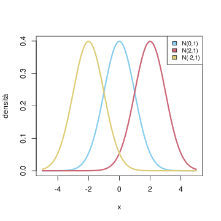
densità gaussiana al variare del parametro \(m\) (con \(\sigma=1\) costante
deltax=0.01x =seq(-5,5,by=deltax)# stavolta usiamo direttamente il comando dnorm() per ottenere la densità della gaussiana (l'unica accortezza è che R usa come parametro sigma e non la varianza sigma^2)# caso sigma=1densita=dnorm(x, mean=0, sd=1)plot(x, densita, type='l', xlab='x', ylab='densità', ylim=c(0,0.8), col=miei_colori[1], lwd=3 )# caso sigma=2densita=dnorm(x, mean=0, sd=1/2)lines(x, densita, type='l', col=miei_colori[2], lwd=3 )# caso sigma=1/2densita=dnorm(x, mean=0, sd=2)lines(x, densita, type='l', col=miei_colori[3], lwd=3)legend('topright', fill=miei_colori[1:3], legend=c("N(0,1)", "N(0,1/4)", "N(0,4)"), cex=0.8)
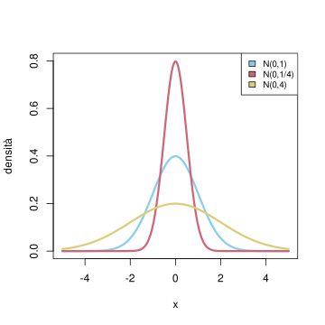
densità gaussiana al variare del parametro \(\sigma\) (con \(m=0\) costante
Osservazione. La densità gaussiana è identificata dai due parametri di valor medio \(m\) e varianza \(\sigma^2\). Si può mostrare che, al variare di tutte le possibili densità continue per una variabile \(X\), \(p(X=x)\), con \(x \in \R\), tali che il valor medio e la varianza di \(X\) siano fissati \[ \E{X} = \int_{-\infty}^\infty x P(X=x) d x = m, \quad \Var{X} = \int_{-\infty}^\infty (x-m)^2 P(X=x) d x = \sigma^2,\] la densità gaussiana \(\mathcal{N}(m,\sigma^2)\) è quella di massima entropia. Pertanto, seguento principio di massima entropia, il robot, avendo a disposizione come informazione su una variabile aleatoria (reale) solamente il suo valor medio \(m\) e la varianza \(\sigma^2\), imporrà che sia una densità gaussiana \(\mathcal{N}(m,\sigma^2)\).
Un’applicazione della formula di cambio di variabile per densità continua permette di ottenere il seguente risultato.
Sia \(X\) una variabile con densità continua \(\mathcal{N}(m, \sigma^2)\) e siano \(\lambda\neq 0\), \(c \in \R\). Allora la variabile \(Y = \lambda X +c\) ha densità continua gaussiana, di parametri \(\mathcal{N}(\lambda m+c, \lambda^2\sigma^2)\).
Si può anche ricordarlo solo così: trasformazioni lineari affini di variabili con densità gaussiana hanno densità gaussiana, perché per ottenere parametri di media e varianza basta ricordare il caso generale.
Dimostrazione. Applicando la formula di cambio di variabile con \(g(x) = \lambda x +c\), essendo \(g'(x) = \lambda\), \(g^{-1}(y) = (y-c)/\lambda\), si trova che \[ p(Y=y) = p( X = (y-c)/\lambda ) \cdot \frac{1}{|\lambda|}.\]
In particolare, se \(X\) ha densità gaussiana \(\mathcal{N}(m,\sigma^2)\), la sua standardizzata \[ \frac{X-m}{\sigma} \quad \text{ha densità continua $\mathcal{N}(0, 1)$,}\] pertanto detta anche densità gaussiana standard, che ha densità \[ \exp\bra{ - \frac 1 2 x^2 }\frac{1}{\sqrt{2 \pi}} \quad \text{per $x \in \R$.}\]
Osservazione. Nel caso \(\lambda = 0\), la variabile \(\lambda X + c = c\) è costante. Per uniformare le notazioni, si conviene di considerare anche le variabili costanti come caso degenere di una densità gaussiana. Nel caso vettoriale vedremo che una convenzione simile sarà anche più utile.
La funzione di ripartizione gaussiana (anche nel caso standard) non è esprimibile in termini di funzioni elementari. Il comando R per ottenerne i valori è pnorm().
Si può invece calcolare esplicitamente la funzione generatrice dei momenti e la funzione caratteristica di una qualsiasi variabile gaussiana, che possono essere utili per ottenere i momenti di ordine superiore al secondo.
Sia \(X\) una variabile con densità continua \(\mathcal{N}(m, \sigma^2)\). Allora \[ \operatorname{MGF}_X(t) = \exp\bra{ mt + \frac{\sigma^2}{2} t^2},\] e \[ \varphi_X(\xi) = \exp\bra{ im\xi - \frac{\sigma^2}{2} \xi^2}.\]
Dimostrazione. Diamo la dimostrazione solo nel caso della MGF (la funzione caratteristica segue formalmente ponendo \(i \omega\) al posto di \(t\)).
Scrivendo \(X = \sigma X' + m\), dove \(X'\) è la standardizzata di \(X\) e quindi ha densità gaussiana \(\mathcal{N}(0,1)\), si ha \[ \operatorname{MGF}_X(t ) =\operatorname{MGF}_{\sigma X' +m} (t ) = \operatorname{MGF}_{X'}(\sigma t) e^{tm}.\] Possiamo quindi ridurci al caso di una gaussiana standard \(\mathcal{N}(0,1)\). Scrivendo l’integrale in questione si trova che la MGF è \[\begin{split} \int_{-\infty}^\infty e^{tx} e^{- \frac{ x^2}{2}} \frac{d x}{\sqrt{ 2 \pi}} & = \int_{-\infty}^\infty \exp\bra{- \frac 1 2 \bra{ - 2 tx +x^2 }} \frac{d x}{\sqrt{ 2 \pi}}\\
& = e^{\frac {t^2}{2}} \int_{-\infty}^\infty \exp\bra{- \frac 1 2 \bra{ t^2 - 2 tx +x^2 }} \frac{d x}{\sqrt{ 2 \pi}}\\
& = e^{\frac {t^2}{2}} \int_{-\infty}^\infty \exp\bra{- \frac 1 2 \bra{ t-x}^2 } \frac{d x}{\sqrt{ 2 \pi}}\\
& = e^{\frac {t^2}{2}},
\end{split}\] dove l’ultimo integrale vale \(1\) perché riconosciamo una densità \(\mathcal{N}(t,1)\).
5.1.1 Esercizi
Usando il comando \(pnorm()\), verificare la “regola” del \(68\)-\(95\)-\(99.7\), ossia mostrare che con probabilità del \(68\%\) circa una variabile gaussiana \(\mathcal{N}(m, \sigma^2)\) assume valori nell’intervallo \([m-\sigma, m+\sigma]\), con probabilità \(95\%\) nell’intervallo \([m-2\sigma, m+2 \sigma]\) e infine con probabilità \(99.7\%\) nell’intervallo \([m-3\sigma, m+3\sigma]\).
Mostrare che il quantile di una densità gaussiana standard \(q: (0,1) \to \R\) soddisfa l’identità \(q(1-\alpha) = -q(\alpha)\) per ogni \(\alpha \in (0,1)\). Verificarlo anche mediante plot usando il comando qnorm().
Calcolare il momento terzo e quarto di una variabile con densità gaussiana standard e successivamente anche nel caso di una densità gaussiana generale \(\mathcal{N}(m, \sigma^2)\).
5.2 Il caso vettoriale
Avendo descritto il caso delle variabili reali con densità gaussiana, l’estensione al caso vettoriale è una generalizzazione, tecnica, ma tutto sommato diretta. Possiamo quindi iniziare dando la seguente definizione.
Si dice che una variabile aleatoria \(X \in \R^d\) ha densità continua gaussiana se vale \[ p(X=x) \propto \exp\bra{ \sum_{i,j=1}^d a_{ij} x_i x_j + \sum_{i=1}^d b_ix_i}, \quad \text{per ogni $x = (x_1, \ldots, x_d) \in \R^d$,}\] per degli opportuni parametri \(a = (a_{ij})_{i,j=1}^d \in \R^{d\times d}\), \(b = (b_i)_{i=1}^d \in \R^d\).
Stavolta il (multi-)parametro \(a = (a_{ij})_{i,j=1}^d\) corrisponde ad una matrice e \(b = (b_i)_{i=1}^d \in \R^d\) è un vettore. Sfruttando il calcolo matriciale e il prodotto scalare possiamo scrivere in forma compatta \[\sum_{i,j=1}^d a_{ij} x_i x_j + \sum_{i=1}^d b_ix_i = x \cdot (ax) + b \cdot x.\] Possiamo anche supporre \(a\) simmetrica (la parte simmetrica non darebbe alcun contributo) e definita positiva (altrimenti integrando su tutto \(\R^d\) non si ottiene un integrale finito).
Come nel caso reale, ma con un po’ più di calcoli (che omettiamo) si può ottenere una formula che collega i parametri \(a\), \(b\) con la matrice delle covarianze e il vettore dei valor medi di \(X\).
Sia \(X \in \R^d\) una variabile con densità gaussiana definita come sopra. Allora la matrice delle covarianze \(\Sigma_X\) è definita positiva (quindi invertibile) e vale \[ a = -\frac{1}{2}\Sigma_X^{-1}, \quad b = \Sigma_X^{-1}\E{X},\] ossia \[ \Sigma_X = -\frac{1}{2} a^{-1} \quad \E{X} = -\frac 1 2 a^{-1} b .\]
La formula della densità si può quindi riscrivere in termini di \(m =\E{X} \in \R^d\) e \(\Sigma_X \in \R^{d\times d}\), in modo analogo al caso reale.
Si dice che \(X \in \R^d\) ha densità continua gaussiana di vettore dei valor medi \(m \in \R^d\) e matrice delle covarianze \(\Sigma>0\), e si scrive brevemente \(\mathcal{N}(m, \Sigma)\), se vale \[ p(X=x ) \propto \exp\bra{ - \frac 1 2\bra{ (x-m)\cdot \Sigma^{-1} (x-m)} }.\] Più esplicitamente, si può mostrare che vale l’identità \[ p(X=x) = \exp\bra{ - \frac1 2\bra{ (x-m) \cdot \Sigma^{-1} (x-m)} } \frac{1}{\sqrt{ (2 \pi)^d \det(\Sigma)}}.\]
Come visualizzare una densità gaussiana vettoriale? Nel caso bidimensionale \(d=2\), possiamo usare una heatmap (mappa del calore) in cui si rappresentano i valori della densità come colori (colori luminosi corrispondono tipicamente a valori alti della densità, ma è sempre bene affiancare una scala esplicativa).
deltax=0.1deltay=0.1x=seq(-3,3, by=deltax)y=seq(-3,3, by=deltay)N_y =length(y)N_x =length(x)# creiamo una matrice con i valori della densitàdensita =matrix( 0, nrow = N_y, ncol =N_x)for (i in1:N_x ){for (j in1:N_y){ densita[i,j]=exp(-(x[i]^2+y[j]^2)/2) /(2*pi) }}# usiamo image() per produrre il grafico (lo mostriamo solo perché è un comando generale per plottare una matrice). In alternativa si può anche usare filled.contour(), come vedremo nel prossimo esempio. Usiamo una scala di colori studiata perché sia accessibile anche alle persone che hanno difficoltà a percepire i colori.library(viridis)
Loading required package: viridisLite
image(x, y, densita, col=viridis(20))
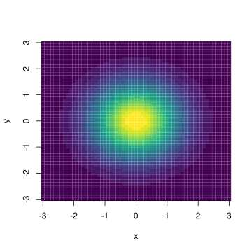
visualizzazione della densità gaussiana vettoriale per \(d=2\), \(m=0\) e \(\Sigma=Id\)
Cosa accade se cambiamo la matrice di covarianza? la figura sotto mostra il caso di \[ \Sigma = \bra{ \begin{array}{cc} 2 & 1 \\ 1 & 1 \end{array} }.\]
#usiamo la libreria mvtnorm per le densità gaussiani vettoriali generali (così non dobbiamo scrivere la formula esplicita)library('mvtnorm')# definiamo il vettore dei valor medi m e la matrice di covarianza Km =c(0,0)K =matrix( c(2,1,1,1), nrow=2)deltax=0.1deltay=0.1x=seq(-3,3, by=deltax)y=seq(-3,3, by=deltay)N_x =length(x)N_y =length(y)# creiamo una matrice con i valori della densitàdensita =matrix( 0, nrow = N_y, ncol =N_x)for (i in1:N_x ){for (j in1:N_y){ densita[i,j]=dmvnorm(c(x[i], y[j]), m, K) }}# usiamo stavolta filled.contour() per produrre il grafico e la scala di valori accantofilled.contour(x, y, densita, color.palette = viridis, xlab='x', ylab='y')
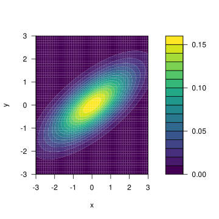
visualizzazione della densità gaussiana vettoriale per \(d=2\), \(m=0\) e \(\Sigma\) definita sopra
Un modo alternativo è di rappresentare solamente una più “curve di livello” della densità, ossia i punti del piano \((x,y) \in \R^2\) tali che \(P((X,Y) = (x,y) ) = c\) per un fissato valore \(c>0\). Vediamo lo stesso esempio di sopra (basta cambiare il comando per il plot).
# usiamo contour() per produrre il grafico. Possiamo specificare quali livelli disegnare con l'opzione levels. Se non specificata R gestisce in automatico quali livelli rappresentarecontour(x, y, densita, col=miei_colori[5], lwd=2, xlab='x', ylab='y')
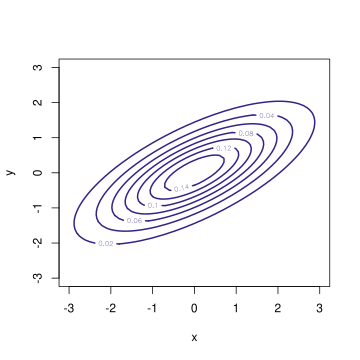
visualizzazione della medesima densità gaussiana ma tramite curve di livello
Osservazione. Vediamo che gli insiemi di livello sono delle ellissi: questo si spiega facilmente, perché l’insieme degli \(x\) tale che \(p(X=x) = c\) coincide con quello di \(\log( p(X=x)) = \log c\), e poiché la densità gaussiana è l’esponenziale di un polinomio di grado due (una “forma quadratica”), si trova l’equazione di una tra le figure geometriche ellisse (o circonferenza), parabola o iperbole. Tuttavia le ultime due non possono mai presentarsi, visto che la densità è infinitesima all’infinito (si avrebbe altrimenti un valore \(c>0\) per alcuni \(x\) arbitrariamente grandi).
Osservazione. La densità gaussiana pure nel caso vettoriale è identificata dal vettore dei valor medi \(m\) e dalla matrice delle covarianze \(\Sigma\). Analogamente al caso reale, si può mostrare che essa è la densità di massima entropia quando tali parametri sono fissati.
Vediamo ora le proprietà principali per la densità gaussiana nel caso vettoriale. La formula di cambio di variabile per densità continue permette di mantenere densità gaussiane tramite mappe lineari affini.
Sia \(X \in \R^d\) una variabile con densità gaussiana \(\mathcal{N}(m,\Sigma)\) e sia \(A \in \R^{k\times d}\), \(b \in \R^k\). Allora, la variabile \(Y = AX+b\) ha densità gaussiana \(\mathcal{N}(Am+b, A \Sigma A^T)\), purché \(A \Sigma A^T\) sia invertibile (o, il che è lo stesso, definita positiva).
La condizione \(A \Sigma A^T\) definita positiva garantisce che la densità esista. In realtà, come nel caso reale, è utile includere anche i casi degeneri in cui è solamente semi-definita positiva (accenniamo come fare questa estensione verso la fine della sezione). Per ora applicheremo il risultato senza preoccuparci di questa condizione. Una prima conseguenza riguarda il caso di \(k=1\), ossia di variabili gaussiane reali ottenute da un vettore aleatorio gaussiano (ad esempio, le marginali).
Sia \(X \in \R^d\) una variabile con densità continua \(\mathcal{N}(m, \Sigma)\). Allora 1. ogni marginale \(X_i\) ha densità \(\mathcal{N}(m_i, \Sigma_{ii})\), 2. per ogni \(v \in \R^d\), la variabile \(v \cdot X = \sum_{i=1}^d v_i X_i\) ha densità \(\mathcal{N}(v \cdot m, v \cdot \Sigma v)\).
Ad esempio, se le due marginali \(X_1\), \(X_2\) di \(X\) sono non correlate, sa ha che, ponendo \(v = (1,1,0,0,\ldots)\) la variabile \(X_1+X_2\) ha densità \(\mathcal{N}(m_1+m_2, \sigma_{X_1}^2 + \sigma_{X_2}^2)\).
Una conseguenza importante riguarda le variabili standardizzate.
Sia \(X \in \R^d\) una variabile con densità continua \(\mathcal{N}(m, \Sigma)\). Allora la variabile standardizzata \[ Z = \sqrt{D}^{-1} U (X-m) \quad \text{ha densità continua $\mathcal{N}(0, Id)$,}\] detta anche gaussiana standard vettoriale. La densità esplicita è piuttosto semplice e vale \[ P(Z= z | \mathcal{N}(0, Id)) = \exp\bra{ - \frac1 2 \sum_{i=1}^d z_i^2 } \frac{1}{\sqrt{ (2 \pi)^d}}. \]
Notiamo che la densità si decompone come prodotto di densità gaussiane standard reali (corrispondenti ai valori delle marginali): \[ \exp\bra{ - \frac1 2 \sum_{i=1}^d z_i^2 } \frac{1}{\sqrt{ (2 \pi)^d}} = \prod_{i=1}^d \exp\bra{ - \frac1 2 z_i^2 } \frac{1}{\sqrt{ 2 \pi}}.\] Ne segue che le variabili marginali \(Z_1\), \(Z_2\), \(Z_d\) sono indipendenti, oltre ad essere non correlate. Per le variabili con densità gaussiana l’indipendenza è praticamente equivalente alla non correlazione: vale infatti il seguente risultato (non vero in generale per variabili non gaussiane!).
Siano \(X \in \R^d\), \(Y \in \R^k\) variabili aleatorie indipendenti con densità gaussiane. Allora la variabile congiunta \((X,Y) \in \R^{d+k}\) ha densità gaussiana.
Viceversa, se la variabile congiunta \((X,Y) \in \R^{d+k}\) ha densità gaussiana e \(\Cov{X_i,Y_j} = 0\) per ogni \(i\in \cur{1, \ldots, d}\), \(j \in \cur{1, \ldots, k}\), allora \(X\) e \(Y\) sono indipendenti.
Dimostrazione. Nel primo caso, la densità congiunta è il prodotto delle densità marginali. Usando la definizione veloce, scriviamo \[p( (X,Y)=(x,y)) = p(X=x) p(Y=y) \propto \exp\bra{ x\cdot ax + b \cdot x} \exp\bra{ y \cdot a' y + b' \cdot y}\] per opportuni (multi-)parametri \(a\), \(b\), \(a'\), \(b'\). Le proprietà dell’esponenziale implicano la densità si scrive come un’esponenziale di un polinomio di secondo grado nelle variabili \(x=(x_i)_{i=1}^d\) e \(y=(y_j)_{j=1}^k\), pertanto è una densità gaussiana.
Viceversa, se la variabile congiunta ha densità gaussiana e \(\Cov{X_i, Y_j} = 0\), significa che la varianza \(\Sigma_{(X,Y)}\) ha una struttura di matrice a blocchi, \[ \Sigma_{(X,Y)} = \bra{ \begin{array}{cc} \Sigma_X & 0 \\ 0 & \Sigma_Y \end{array}}.\] Ora si può mostrare che l’inversa \(\Sigma_{(X,Y)}^{-1}\) ha pure la struttura a blocchi (nel caso \(2\times 2\) è immediato): \[ \Sigma_{(X,Y)}^{-1} = \bra{ \begin{array}{cc} \Sigma_X^{-1} & 0 \\ 0 & \Sigma_Y^{-1} \end{array}}.\] Perciò, il termine quadratico nella densità congiunta si spezza come somma di due termini quadratici associati alle marginali: \[ (x,y) \cdot \Sigma_{(X,Y)}^{-1}(x,y) = x \cdot \Sigma_X^{-1} x + y \cdot \Sigma_Y ^{-1} y\] e lo stesso per il termine lineare \[ (m_X, m_Y) \cdot (x,y) = m_X \cdot x + m_Y \cdot y\] in conclusione, la densità congiunta si spezza come prodotto di due densità marginali \[ p( (X,Y)=(x,y)) \propto \exp\bra{ -\frac 1 2 x \cdot \Sigma_X^{-1} x + m_X \cdot x} \exp\bra{ -\frac 1 2 y \cdot \Sigma_Y^{-1} y + m_Y \cdot y} \] e quindi vale l’indipendenza.
Riprendendo l’esempio della somma delle marginali del vettore gaussiano, segue che se \(X\), \(Y\) sono due variabili gaussiane reali indipendenti, allora \((X, Y)\) è un vettore gaussiano e quindi la somma delle marginali \(X+Y\) è gaussiana (reale) con i parametri naturali (somma delle medie e somma delle varianze) \(\mathcal{N}(m_X+m_Y, \sigma_{X}^2 + \sigma_{X}^2)\).
Dato un vettore gaussiano \((X,Y)\), non solo le marginali \(X\) e \(Y\) hanno densità gaussiana, ma anche la densità condizionale di una marginale, diciamo \(X\), rispetto all’altra (\(Y\)) è gaussiana, come mostra la seguente proposizione (i parametri si possono anche calcolare esplicitamente, ma non lo riportiamo per semplicità).
Sia \((X,Y) \in \R^{d+k}\) un vettore aleatorio con densità gaussiana. Allora, per ogni \(y \in \R^k\), condizionatamente a \(\cur{Y=y}\), la densità di \(X \in\R^d\) è gaussiana.
Dimostrazione. Ricordiamo che la densità condizionale si può ottenere dalla densità congiunta “congelando” la variabile rispetto alla quale si condiziona \(y\) (a essere precisi non si trova direttamente la densità, perché bisognerebbe comunque moltiplicare per una costante opportuna, ma a noi basterà questo, per riconoscere la densità gaussiana). È chiaro che, se all’esponente abbiamo un polinomio di secondo grado nelle variabili \(x\), e \(y\), fissando la \(y\) otterremo comunque un polinomio di secondo grado nella \(x\). Pertanto non vi è dubbio che la densità condizionale di \(X\) sapendo \(Y=y\) è gaussiana.
Concludiamo con un risultato che riguarda la funzione generatrice dei momenti e la funzione caratteristica di una variabile gaussiana nel caso vettoriale.
Sia \(X \in \R^d\) una variabile con densità continua gaussiana \(\mathcal{N}(m, \Sigma)\). Allora \[ \operatorname{MGF}_X(t) = \exp\bra{ m\cdot t + \frac{1}{2} t \cdot \Sigma t},\] e \[ \varphi_X(\xi) = \exp\bra{ im\cdot\xi - \frac{1}{2} \xi \cdot \Sigma \xi}.\]
Dimostrazione. Basta notare che, fissato \(t \in \R^d\), la variabile reale \(X\cdot t\) ha densità gaussiana di media \(m \cdot t\) e varianza \(t \cdot \Sigma t\). Pertanto usando la \(\operatorname{MGF}\) già nota nel caso delle variabili gaussiane reali, segue che \[ \operatorname{MGF}_X(t) = \E{\exp\bra{ t \cdot X}}=\operatorname{MGF}_{X \cdot t} (1) = \exp\bra{ m\cdot t + \frac{1}{2} t \cdot \Sigma t}.\] Similmente per la funzione caratteristica.
Osservazione. Notiamo che sia la funzione generatrice dei momenti che la funzione caratteristica sono esponenziali di polinomi di secondo grado nelle variabili (\(t\) e \(\xi\) rispettivamente). Tuttavia, rispetto alla densità, la matrice di covarianza \(\Sigma\) non è invertita, né il suo determinante compare al denominatore (in effetti, proprio non compare). Pertanto, le espressioni continuano ad avere senso anche nel caso degenere, in cui \(\Sigma\) è semidefinita positiva (ma non necessariamente invertibile). Ricordando che la funzione caratteristica identifica in modo unico la legge di una variabile aleatoria (sia he abbia densità, ma anche se non ce l’ha), questa espressione permette allora di **definire* una variabile aleatoria vettoriale gaussiana anche nel caso in cui non abbia densità continua. L’intepretazione in tali casi è che la densità continua si concentra “troppo” in un sottospazio affine di dimensione più bassa dello spazio ambiente \(\R^d\). Per visualizzare cosa accade, diamo un plot nel caso “quasi degenere” ponendo ad esempio \[ \Sigma = \bra{ \begin{array}{cc} 1 & 0.99 \\ 0.99 & 1\end{array}}.\]
# definiamo il vettore dei valor medi m e la matrice di covarianza Km =c(1,1)K =matrix( c(1,0.99,0.99,1), nrow=2)deltax=0.05deltay=0.05x=seq(-4,4, by=deltax)y=seq(-4,4, by=deltay)N_x =length(x)N_y =length(y)# creiamo una matrice con i valori della densitàdensita =matrix( 0, nrow = N_y, ncol =N_x)for (i in1:N_x ){for (j in1:N_y){ densita[i,j]=dmvnorm(c(x[i], y[j]), m, K) }}contour(x, y, densita, levels=c(0.001, 0.01, 0.1,1), col=miei_colori[5], lwd=1, xlab='x', ylab='y')
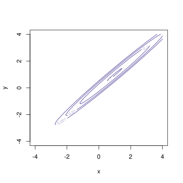
rappresentazione della densità gaussiana vettoriale nel caso vettoriale \(d=2\), \(m=(1,1)\) e \(\Sigma\) definita sopra
5.2.1 Esercizi
Dire se la matrice \[ \Sigma = \bra{ \begin{array}{cc} 2 & -1 \\ -1 & 3 \end{array} }.\] può essere la matrice di covarianza di una variabile gaussiana. In caso affermativo, usare opportuni comandi R per visualizzare (come heatmap oppure curve di livello) la densità.
Sia \((X,Y)\) un vettore aleatorio gaussiano a valori in \(\R^2\) con valor medio \(m =(1,-2)\) e covarianza \[ \Sigma = \bra{ \begin{array}{cc} 4 & -3 \\ -3 & 4 \end{array} }.\] - Determinare la densità della variabile \(Z = X+2Y\). - Dire se la variabile \((X,Z)\) è gaussiana e determinarne i parametri (suggerimento scriverla come trasformazione lineare di \((X,Y)\)). - Usare opportuni comandi R per visualizzare la densità di \((X,Y)\) e \((X,Z)\).
5.3 Stima dei parametri da una singola osservazione
Data una variabile aleatoria \(X \in \R^d\) con densità gaussiana \(\mathcal{N}(m, \Sigma)\), come stimare i parametri basandosi sull’osservazione di \(X\)? Come abbiamo visto nella Sezione Sezione 3.5, tale problema può essere naturalmente studiato dal punto di vista bayesiano, supponendo quindi che i parametri \(m\), \(\Sigma\) siano delle variabili aleatorie con opportune densità a priori, e determinando quindi la densità avendo osservato \(X=x\) tramite la formula di Bayes. A questo metodo si affianca l’alternativa più diretta, ma meno informativa, di limitarsi ad una stima di massima verosimiglianza.
Per illustrare il metodo, iniziamo con lo studio in questa sezione del caso di una variabile aleatoria \(X \in \R\) di cui bisogna stimare i parametri \(m\), \(\sigma^2\) sulla base della sola osservazione di \(X\). Nella sezione successiva, generalizzeremo al caso in cui vi siano più osservazioni e argomenteremo che la stima diverrà allora più precisa.
Supponiamo in questa sezione che il robot abbia modellizato una quantità aleatoria reale \(X \in \R\) come una variabile con densità gaussiana \(\mathcal{N}(m,\sigma^2)\). I parametri non sono noti a priori, e vengono stimati sulla base di una osservazione \(X=x\). Pertanto seguendo il metodo bayesiano il robot introduce le rispettive variabili aleatorie \(M\) per la media e \(V\) per la varianza (questa a valori positivi).
La verosimiglianza, ossia la densità di \(X\) supponendo note la media \(M=m\) e la varianza $V = v $ (usiamo la lettera \(v\) al posto di \(\sigma^2\), per alleggerire la notazione) è quindi \[ L( m,v; x) = p(X =x | M=m V=v) = \exp\bra{ - \frac 1 {2 v} (x-m)^2 }\frac{1}{\sqrt{ 2 \pi v}}.\] È importante specificare tutta la densità (anche se il termine \(\sqrt{2 \pi}\) non sarebbe rilevante), perché interessa la dipendenza dai parametri \(m\) e \(v\). Possiamo rappresentare graficamente la funzione dei due parametri \((m,v)\) con una heatmap.
deltam=0.1deltav=0.05m=seq(0,2, by=deltam)v=seq(0.01,0.5, by=deltav)N_m =length(m)N_v =length(v)# osservazionex=1# creiamo una matrice con i valori della verosimiglianzaL =matrix( 0, nrow = N_m, ncol =N_v)for (i in1:N_m){for (j in1:N_v){ L[i,j]=exp(-(m[i]-x)^2/(2*v[j])) /sqrt(2*pi *v[j]) }}# usiamo stavolta filled.contour() per produrre il grafico e la scala di valori accantofilled.contour(m, v, L, color.palette=viridis, xlab='m', ylab='v')
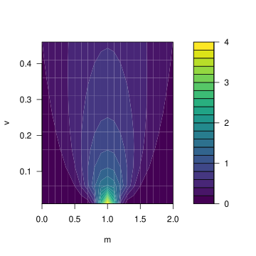
verosimiglianza per \(M\) e \(V\) avendo osservato \(X=1\).
5.3.1 Stima di massima verosimiglianza
Dal grafico sopra è evidente che la verosimiglianza \(L\) è massima per \(m=x\) (in tal caso era \(X=1\)) e \(v=0\), un fatto che ora giustifichiamo analiticamente, determinando la stima di massima verosimiglianza per i parametri. Passando al logaritmo e moltiplicando per \(-2\), invece di massimizzare \(L\) basta minimizzare la funzione \[ (m,v) \mapsto - 2 \log L(m,v; x) = \frac 1 { v} (x-m)^2 + \log( 2 \pi v).\] Derivando rispetto a \(m\) e imponendo che la derivata si annulli si ottiene, per ogni \(v>0\), \[ \frac 2 { v} (x-m) =0 \quad \text{da cui $m=x$,} \] mentre se deriviamo rispetto a \(v\), tenendo fisso \(m\), si trova \[ -\frac 1 { v^2} (x-m)^2 + \frac{1}{v} = 0, \quad \text{da cui $v = (x-m)^2$. }\] dovendo massimizzare congiuntamente si trova quindi la coppia \(m_{{\mle}} =x\), \(v_{{\mle}} = 0\) (anche se, ad essere rigorosi, per \(v=0\) non è ben definita la verosimiglianza).
Con calcoli analoghi a quanto fatto sopra si ottiene anche che 1. se il parametro di varianza \(V=v_0 >0\) è noto (ossia \(V=v_0\) è costante rispetto all’informazione a priori), allora la stima di massima verosimiglianza per il parametro di media è \(m_{\mle} = x\) (qualsiasi sia \(v_0\)). 2. se il parametro di media \(M=m_0 \in \R\) è noto (ossia \(M=m_0\) è costante a priori), allora la stima di massima verosimiglianza per il parametro di varianza è \(v_{{\mle}} = (x-m_0)^2\).
5.3.2 Stima bayesiana per la media, varianza nota
Per applicare il metodo bayesiano, il robot deve proporre delle densità a priori per media \(M\) e varianza \(V\) che rappresentano l’informazione di cui dispone prima di osservare \(X\), e applicare la formula di Bayes per ottenere le densità condizionate a \(X=x\). Ovviamente le densità a priori dipendono dalla natura dell’informazione iniziale di cui dispone. La semplice rete bayesiana che rappresenta il problema è rappresentata in figura.
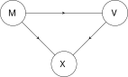
Rete bayesiana tra le variabili \(M\), \(V\) e \(X\)
Affrontiamo prima due casi estremi, in cui i risultati si possono ottenere analiticamente, se si scelgono delle densità a priori particolari: consideriamo prima il caso in cui \(V = v_0\) sia nota (e quindi sia una variabile costante) e successivamente quello in cui \(M = m_0\) sia invece nota. In questi casi si può rimuovere il nodo corrispondente alle variabili costanti dalla rete bayesiana.
Supponendo che \(V=v_0\) sia costante, i calcoli risultano particolarmente semplici se si suppone che \(M\) sia una variabile gaussiana con parametri (noti) \(\mathcal{N}(m_0, \sigma_m^2)\), ossia \[ p(M= m| \Omega) \propto \exp\bra{-\frac 1 {2\sigma_m^2} (m-m_0)^2}.\] Questa densità codifica una informazione nota al robot riguardante il parametro di media \(m\): esso è localizzato intorno al parametro \(m_0\), con una dispersione (deviazione standard) \(\sigma_m\). Per rappresentare maggiore incertezza su \(M\) è sufficiente far crescere \(\sigma_m\), e nel limite \(\sigma_m \to \infty\) vedremo che si ricade nella stima di massima verosimiglianza.
Avendo osservato \(X=x\), dalla formula di Bayes segue che la densità per \(M\) è \[ \begin{split} p(M=m| X=x) & \propto p(M=m|\Omega ) p(X =x | M=m, V=v_0) \\
& \propto \exp\bra{ -\frac 1 2 \bra{ \frac{ (m-m_0)^2}{\sigma_m^2} + \frac { (x-m)^2}{v_0} }}.\end{split}\] Si tratta evidentemente di una nuova densità gaussiana essendo l’esponenziale di un polinomio di secondo grado nella variabile \(m\). Con semplici passaggi algebrici si ricavano i parametri di media e varianza, che dipendono naturalmente dall’osservazione \(x\), \[ m_{|X=x} = (1-\alpha) x + \alpha m_0, \quad \sigma^2_{m|X=x} = \sigma_m^2\alpha,\] dove abbiamo posto, per semplicità, \[\alpha = \frac{1}{1+\sigma_m^2/v_0 } \in (0,1).\] Osserviamo quindi che la nuova informazione \(X=x\) “sposta” la fiducia del robot verso il valore osservato \(x\), ma non completamente (come invece accade con la massima verosimiglianza). Molto dipende dal valore di \(\alpha\), ossia dal rapporto tra le varianze \(\sigma_m^2/v_0\) (entrambe note a priori). I casi limite sono particolarmente rilevanti: 1. se \(v_0<< \sigma_m^2\), allora \(\alpha \sim 0\) e ci si avvicina alla stima di massima verosimiglianza (il che non stupisce perché \(\sigma_m\) grande significa che la densità a priori per \(M\) era poco informativa) 2. se \(v_0>> \sigma_m^2\), allora \(\alpha \sim 1\) e la media \(m_{|X=x}\) rimane praticamente invariata, essenzialmente perché l’informazione iniziale era molto precisa su \(M\), e una singola osservazione non la modifica molto.
5.3.3 Stima bayesiana per la varianza, media nota
Supponiamo ora che \(M =m_0\) sia costante rispetto all’informazione iniziale disponibile al robot e introduciamo una densità a priori per la varianza \(V\). Uno dei problemi principali è che \(V\) deve essere non-negativa, ma vi sono diverse scelte comode per ottenere risultati analitici. Una di queste è una densità continua del tipo esponenziale inversa, ossia \(1/V\) è esponenziale con parametro \(\lambda = v_0/2\) (dove \(v_0\) è un parametro che riteniamo noto mentre il coefficiente \(1/2\) è solo per semplificare i calcoli). Dalla formula di cambio di variabile si trova che \[ p( V = v|\Omega) \propto p(1/V = 1/v)\frac{1}{v^2} \propto \exp\bra{ -\frac{v_0}{2v}}\frac{1}{v^2}.\]
grafico della densità esponenziale inversa con \(v_0=1\)
Con questa scelta, avendo osservato \(X=x\), la formula di Bayes implica che la densità per \(V\) è \[ \begin{split} p(V=v| X=x) & \propto p(V=v|\Omega ) p(X =x | M=m_0, V=v) \\
& \propto \exp\bra{ - \frac{v_0}{2v} } \frac 1 {v^2} \exp\bra{-\frac 1 {2v} (x-m_0)^2 } \frac{1}{\sqrt{v}}\\
&\propto\exp\bra{ - \frac{ \bra{v_0 + (x-m_0)^2} } {2v}} \frac{1}{v^{5/2}}\end{split}\] Si tratta di una densità continua molto simile a quella a priori, in cui il nuovo parametro (al posto di \(v_0\)) è \[ v_{|X=x} = v_0 + (x-m_0)^2.\] A prima vista potrebbe quindi sembrare che la varianza cresca sempre, ma bisogna anche notare che il termine \(v^2\) al denominatore è sostituito con \(v^{5/2}\). Questo ha l’effetto di trasformare la densità circa in modo che, se \((x-m_0)^2\) è minore di \(v_0\), allora la densità di \(V\) si concentra verso valori più vicini a \(0\), viceversa se \((x-m_0)^2\) è maggiore, allora la densità di \(V\) si concentra verso valori maggiori.
deltav=0.01v=seq(deltav, 4, by=deltav)# densità a prioriv_0 =1densita_esp_inv =exp(-(v_0/(2*v)))/v^2densita_esp_inv = densita_esp_inv/sum(densita_esp_inv *deltav)# parametro m_0 e osservazione di Xm_0 =0x_1=0x_2=2## Usiamo direttamente la formula trovata soprav_x_1 = v_0 + (x_1-m_0)^2dens_post_x_1 =exp(-(v_x_1/(2*v)))/v^{5/2}dens_post_x_1 = dens_post_x_1/sum(dens_post_x_1*deltav)v_x_2 = v_0 + (x_2-m_0)^2dens_post_x_2 =exp(-(v_x_2/(2*v)))/v^{5/2}dens_post_x_2 = dens_post_x_2/sum(dens_post_x_2*deltav)# grafico e legendaplot(v, densita_esp_inv , type='l', xlab='v', ylab='densità', ylim=c(0,2), col=miei_colori[1], lwd=3)lines(v, dens_post_x_1, type='l', col=miei_colori[2], lwd=3)lines(v, dens_post_x_2, type='l', col=miei_colori[3], lwd=3)# Legendalegend('topright', legend=c('a priori','X=0', 'X=2'), fill=miei_colori[1:3])
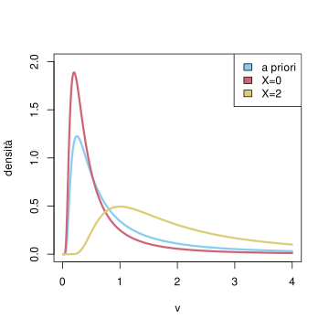
grafico della densità a priori per \(V\), con parametri \(v_0=1\), \(m_0=0\), e della densità avendo osservato \(X=0\) (in rosso) oppure \(X=2\) (in blu)
Lo studio del caso generale dal punto di vista bayesiano, ossia della variabile congiunta \((M,V)\) (senza supporre che una sia costante nota a priori), è più complicato analiticamente. Tuttavia possiamo renderci conto di come l’informazione a priori sia rilevante osservando un risultato numerico ottenuto assumendo che \(M\) e \(V\) siano a priori indipendenti, la prima uniformemente distribuita su \([2,4]\), la seconda sull’intervallo \([1, 3]\), e si osserva \(X=1\). La stima di massima verosimiglianza (calcolata in precedenza su tutti i valori di \(m\) e \(v\) sulla stessa osservazione \(X=1\)) era \(m_{{\mle}}=1\), \(v_{{\mle}} = 0\), ora l’informazione a priori induce una densità congiunta (le cui marginali non sono indipendenti) con un punto di massimo in \(m=2\), \(v=3\). Possiamo intepretare parzialmente questo fatto notando che essendo media a priori tra \(2\) e \(4\), l’osservazione \(X=1\) sposta la media verso il valore più basso possibile \(m=2\).
deltam=0.1deltav=0.05m=seq(2,4, by=deltam)v=seq(1, 3, by=deltav)N_m =length(m)N_v =length(v)# osservazionex=0# creiamo una matrice con i valori della verosimiglianzaL =matrix( 0, nrow = N_m, ncol =N_v)for (i in1:N_m){for (j in1:N_v){ L[i,j]=exp(-(m[i]-x)^2/(2*v[j])) /sqrt(2*pi *v[j]) }}posteriori = L/sum(L *deltam *deltav)# usiamo filled.contour() per produrre il grafico e la scala di valori accantofilled.contour(m, v, posteriori, color.palette=viridis, xlab='m', ylab='v')
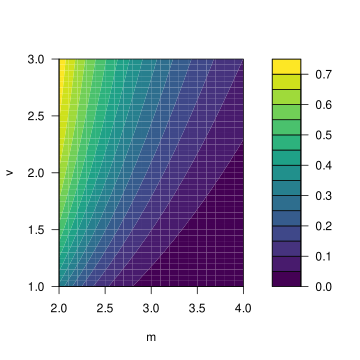
5.4 Stima dei parametri da osservazioni indipendenti
In questa sezione estendiamo i risultati della precedente al caso in cui osservano variabili indipendenti \((X_i)_{i=1}^n\), tutte gaussiane con i medesimi parametri (il termine statistico è un campione di taglia \(n\), il numero di osservazioni). Per avvicinare la notazione al caso precedente, si può alternativamente descrivere la situazione dicendo che il robot stima i parametri sulla base dell’osservazione di un (singolo) vettore aleatorio gaussiano \(X = (X_i)_{i=1}^n\) a valori in \(\R^n\). Nella sezione successiva indichiamo come estendere al caso di \(n\) osservazioni indipendenti di variabili gaussiane a loro volta vettoriali.
La situazione che stiamo descrivendo è molto comune, ad esempio se ciascuna \(X_i\) rappresenta una misura della stessa quantità (rappresentata dal parametro di media) affetta da una imprecisione (un “rumore”) di una opportuna intensità (la deviazione standard): sfruttando l’indipendenza risulta che l’effetto del rumore è mitigato e si ottiene una stima più precisa.
Introduciamo quindi la seguente notazione analoga a quella della sezione precedente: i parametri di cascuna \(X_i\), ossia la media \(\E{X_i}\) e la varianza \(\Var{X_i}\) non dipendono da \(i\), e scriviamo quindi \[ m = \E{X_i} \quad v = \Var{X_i} \quad \text{per ogni $i=1, \ldots, n$.}\] Come nel caso della singola osservazione, si introducono le rispettive variabili aleatorie \(M\) per la media, \(V\) per la varianza (la seconda a valori positivi).
La rete bayesiana associata è rappresentata in figura e generalizza quella della sezione precedente (abbiamo introdotto la variabile congiunta \((M,V)\) per semplificare la notazione).
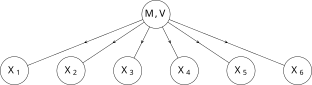
Rete bayesiana tra le variabili \((M,V)\) e le \((X_i)_{i=1}^n\) per \(n=6\)
Poter disporre di più osservazioni indipendenti degli stessi parametri intuitivamente permette di ottenere stime più precise, un fatto che ora vediamo sia tramite l’approccio di massima verosimiglianza che quello bayesiano.
5.4.1 Stima di massima verosimiglianza
L’ipotesi di indipendenza, noti \(m\) e \(v\), si traduce nel fatto che la densità dell’osservazione di \(X=x\), ossia la congiunta delle osservazioni \(X_i=x_i\) per \(i=1,\ldots, n\), è la verosimiglianza \[ \begin{split} L(m, v; x)& = p(X=x|M=m,V=v) = p(X_1 = x_1, \ldots X_n = x_n | m, v) \\
& = p(X_1 = x_1 | m,v) \cdot \ldots \cdot p(X_n = x_n | m, v) \\
& = \prod_{i=1}^n \exp\bra{ -\frac{1}{2v} (x_i -m)^2 } \frac{1}{\sqrt{ 2 \pi v}} \\
& \propto \exp\bra{ - \frac {n}{2} \bra{ \frac 1 {nv} \sum_{i=1}^n (x_i - m)^2 + \log( v )}},\end{split}\] dove nell’ultimo passaggio abbiamo omesso la costante moltiplicativa \((2 \pi)^{n/2}\) (per semplificare la notazione).
deltam=0.1deltav=0.05m=seq(0,2, by=deltam)v=seq(0.01,1, by=deltav)N_m =length(m)N_v =length(v)# osservazionix=c(1,2,1.5,0.5)n=length(x)# creiamo una matrice con i valori della verosimiglianzaL =matrix( 1, nrow = N_m, ncol =N_v)for (i in1:N_m){for (j in1:N_v){for (obs in x){ L[i,j]= L[i,j]*exp(-(m[i]-obs)^2/(2*v[j])) /sqrt(2*pi *v[j]) } }}# usiamo stavolta filled.contour() per produrre il grafico e la scala di valori accantofilled.contour(m, v, L, color.palette=viridis, xlab='m', ylab='v')
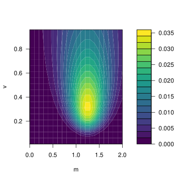
verosimiglianza per \(m\) e \(v\), associata alle osservazioni \(x = (1, 2, 1.5, 0.5)\).
Dal grafico sopra vediamo che la verosimiglianza è una funzione più interessante del caso di una singola osservazione e in particolare il massimo non è necessariamente per \(v=0\). Per applicare il metodo di massima verosimiglianza, passando al logaritmo e moltiplicando per \(-2/n\) e tralasciando costanti additive (che non hanno nessun ruolo utile nella procedura) si tratta quindi di determinare \(m_{{\mle}}\) e \(v_{{\mle}}\) che minimizzano la funzione \[ (m, v) \mapsto \frac{1}{v} \sqa{ \frac 1 {n} \sum_{i=1}^n (x_i - m)^2} + \log( v ) \] Ragionando come nel caso della singola osservazione, deriviamo rispetto ad \(m\) (fissato \(v\)) e imponiamo che la derivata si annulli. Si trova la condizione \[ 2 \sum_{i=1}^n (x_i - m) = 0 \quad \text{da cui} \quad m = \frac{1}{n} \sum_{i=1}^n x_i \] è la media aritmetica delle osservazioni (detta anche media empirica o campionaria, in inglese sample mean), e indicata anche brevemente con \[ \bar{x} = \frac{1}{n} \sum_{i=1}^n x_i,\] Mentre se deriviamo rispetto a \(v\), tenendo fisso \(m\), si trova analogamente al caso della singola osservazione che \[ -\frac 1 { v^2} \frac 1 n \sum_{i=1}^n(x_i-m)^2 + \frac{1}{v} = 0, \quad \text{da cui} \quad v = \frac 1 n \sum_{i=1}^n (x_i-m)^2.\] dovendo massimizzare la funzione delle due variabili si trova quindi la coppia \[ m_{{\mle}} =\bar{x} = \frac 1 n \sum_{i=1}^n x_i \quad v_{{\mle}} = \frac{1}{n}\sum_{i=1}^n(x_i-\bar{x})^2,\] dove l’ultima quantità è detta anche varianza campionaria (sample variance in inglese). Volendo specificare, questa è la versione detta anche distorta (in inglese biased) della varianza campionaria, dove la versione “corretta” o meglio non distorta (unbiased) contiene invece il fattore \(n-1\) a denominatore, una differenza minima quando \(n\) è grande, sulle cui ragioni non ci soffermiamo – tuttavia va tenuto presente che molte funzioni in R usano appunto la versione non distorta.
Come nel caso della singola osservazione, i calcoli sopra ci mostrano anche che, 1. se il pararametro di varianza \(V=v_0 >0\) è noto (ossia \(V=v_0\) è costante), la stima di massima verosimiglianza per il parametro di media è \(m_{{\mle}} = \bar{x}\) (qualsiasi sia \(v_0\)), 2. se il parametro di media \(M=m_0\in \R\) è noto (ossia \(M=m_0\) è costante rispetto all’informazione a priori), allora la stima di massima verosimiglianza per il parametro di varianza è \[ v_{{\mle}} = \frac 1 n \sum_{i=1}(x_i-m_0)^2.\]
Consideriamo il classico dataset “iris”1 che contiene \(150\) osservazioni di esemplari diversi da \(3\) specie della pianta Iris appunto. Non è necessario importarlo in R perché è sempre disponibile (nella libreria datasets precaricata vi sono alcune raccolte di dati che si usano frequentemente come esempi). Con la funzione head(), possiamo visualizzare alcuni dati per farci una idea generale. L’output del comando head(iris) è presentato sotto.
Le prime 10 righe del dataset Iris.
Sepal.Length
Sepal.Width
Petal.Length
Petal.Width
Species
5.1
3.5
1.4
0.2
setosa
4.9
3.0
1.4
0.2
setosa
4.7
3.2
1.3
0.2
setosa
4.6
3.1
1.5
0.2
setosa
5.0
3.6
1.4
0.2
setosa
5.4
3.9
1.7
0.4
setosa
4.6
3.4
1.4
0.3
setosa
5.0
3.4
1.5
0.2
setosa
4.4
2.9
1.4
0.2
setosa
4.9
3.1
1.5
0.1
setosa
Per calcolare media e varianza campionaria delle osservazioni della variabile “lunghezza del sepalo” (una parte del fiore), è sufficiente usare le funzioni mean() e var().
mean(iris$Sepal.Length)
[1] 5.843333
var(iris$Sepal.Length)
[1] 0.6856935
Per calcolare direttamente la deviazione standard dal campione, ossia la radice quadrata dela varianza campionaria, si può usare sd().
sd(iris$Sepal.Length)
[1] 0.8280661
Anche prima di calcolare media e varianza, è sempre buona pratica rappresentare graficamente i dati, in questo caso ad esempio tramite un istogramma.
hist(iris$Sepal.Length, breaks =10, xlab="Lughezza dei sepali", ylab ="Frequenza", main="", col=miei_colori[1])
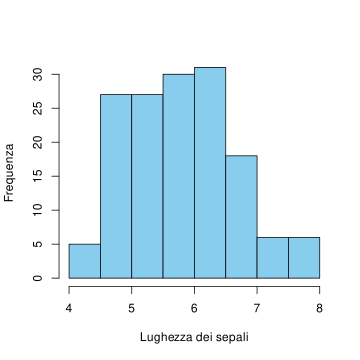
Istogramma della lunghezza dei sepali osservata nel dataset Iris
5.4.2 Stima bayesiana della media, varianza nota
Vediamo ora l’approccio bayesiano, applicandolo prima alla stima della media, supponendo che la varianza \(V = v_0\) sia nota (e quindi costante rispetto all’informazione a priori). Come nel caso della singola osservazione, per avere dei calcoli trattabili analiticamente, conviene supporre che \(M\) a priori abbia una densità gaussiana di parametri \(\mathcal{N}(m_0, \sigma_m^2)\), e avendo osservato \(X=x= (x_i)_{i=1}^n\), il robot calcola poi la densità di \(M\) tramite la formula di Bayes \[ \begin{split} p(M=m| X=x) & \propto p(M=m|\Omega ) p(X=x | M=m, V=v_0) \\
& \propto \exp\bra{ -\frac 1 2 \bra{ \frac{ (m-m_0)^2}{\sigma_m^2} + \sum_{i=1}^n \frac { (x_i-m)^2}{v_0} }}.\end{split}\] Si trova quindi, come nel caso \(n=1\), una nuova densità gaussiana, di cui con passaggi elementari si ricavano i parametri di media e varianza (che dipendono naturalmente dall’osservazione \(X=x\)) \[ m_{|X=x} = (1-\alpha) \bar{x} + \alpha m_0, \quad \sigma^2_{m|X=x} = \sigma_m^2\alpha,\] dove abbiamo posto \[\alpha = \frac{1}{1+n\sigma_m^2/v_0 } \in (0,1).\] Come nel caso della singola osservazione, la nuova informazione \(X=x\), ossia \(X_i=x_i\) per \(i=1, \ldots, n\), sposta la fiducia del robot verso la media campionaria \(\bar{x}\), ossia la stima di massima verosimiglianza.
Osservazione. È naturale chiedersi cosa accada per \(n\) grande, in particolare se \(n >> v_0/\sigma_m^2\). In tal caso, si ha che \(\alpha\) tende a \(0\) e quindi il parametro di media della \(M\) a posteriori tende alla media campionaria \(\bar{x}\), ossia la stima di massima verosimiglianza. Per lo stesso motivo, anche che la varianza di \(M\) tende a \(0\), per cui la distribuzione di \(M\) si concentra sempre più intorno al valore \(\bar{x}\). Questo è un caso particolare di un teorema molto più generale, noto come legge dei grandi numeri, il quale afferma che la differenza tra la media campionaria di un gran numero di variabili aleatorie indipendenti tra loro (tutte con lo stesso valor medio e varianza) e il valor medio teorico diventa piccola con grandissima probabilità al tendere della numerosità del campione \(n\) all’infinito. Ritorneremo su questo fatto nella Sezione Sezione 8.2.
5.4.3 Stima bayesiana della varianza, valor medio noto
Supponiamo ora che \(M =m_0\) sia costante (rispetto all’informazione nota prima di osservare \(X=x\)) e introduciamo come nella sezione precedente una densità a priori per \(V\) di tipo esponenziale inversa, dove \(v_0>0\) è un parametro noto: \[ p( V = v|\Omega) \propto p(1/V = 1/v)\frac{1}{v^2} \propto \exp\bra{ -\frac{v_0}{2v}}\frac{1}{v^2}.\]
Usando la formula di Bayes, \[ \begin{split} p(V=v| X=x) & \propto p(V=v|\Omega ) p(X =x | M=m_0, V=v) \\
& \propto \exp\bra{ - \frac{v_0}{2v} } \frac 1 {v^2} \exp\bra{ - \frac{1}{v} \sum_{i=1}^n (x_i-m_0)^2} \frac{1}{v^{n/2}}\\
&\propto\exp\bra{ - \frac{ \bra{v_0 + \sum_{i=1}^n (x_i-m_0)^2} } {2v}} \frac{1}{v^{(4+n)/2}}.\end{split}\] Come nel caso della singola osservazione, si tratta di una densità continua molto simile a quella a priori, in cui il nuovo parametro (al posto di \(v_0\)) è \[ v_{|X=x} = v_0 + \sum_{i=1}^n (x_i-m_0)^2,\] ma vi è anche il termine \(v^{(4+n)/2}\) a denominatore, che sempre più rilevante al crescere di \(n\). Infatti, il punto di massimo della densità a posteriori (che possiamo ottenere passando al logaritmo, e imponendo la derivata nulla) è dato dall’espressione \[ \frac{ v_{|X=x}}{4+n} = \frac{ v_0 + \sum_{i=1}^n (x_i-m_0)^2}{4+n }\] che al crescere di \(n\) è asintoticamente equivalente alla stima di massima verosimiglianza \[v_{{\mle}} = \frac{1}{n} \sum_{i=1}^n (x_i-m_0)^2\] (supponendo la media \(m_0\) nota).
deltav=0.01v=seq(deltav, 4, by=deltav)# densità a prioriv_0 =1densita_esp_inv =exp(-(v_0/(2*v)))/v^2densita_esp_inv = densita_esp_inv/sum(densita_esp_inv *deltav)# parametro m_0 e osservazione di Xm_0 =0x =c(1,2,1.5,0.5)n =length(x)# Usiamo la formula trovata per la densità a posterioriv_x = v_0 +sum( (x-m_0)^2)dens_post_x =exp(-(v_x/(2*v)))/v^((4+n)/2)dens_post_x = dens_post_x/sum(dens_post_x*deltav)# grafico e legendaplot(v, densita_esp_inv , type='l', xlab='v', ylab='densità', ylim=c(0,1.5),col=miei_colori[1], lwd=3)lines(v, dens_post_x, type='l', col=miei_colori[2], lwd=3)# Legendalegend('topright', legend=c('a priori','a posteriori'), fill=miei_colori[1:2])
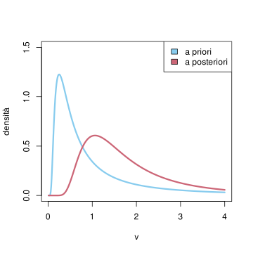
grafico della densità a priori per \(V\), con parametri \(v_0=1\), \(m_0=0\), e della densità avendo osservato $ x=(1, 2, 1.5, 0.5)$ (la stima di massima verosimiglianza è in questo caso \(v_{\mle} = 1\))
5.4.4 Esercizi
Stimare tramite massima verosimiglianza (e mediante opportuni comandi R) i parametri di media e deviazione standard per la lunghezza dei petali nel dataset Iris.
Supponiamo di essere dei biologi che hanno già classificato la specie Iris “setosa” e determinato che la lunghezza di un petalo è \(1.6 \pm 0.2\). Usando i nuovi dati raccolti sulla specie (sono le prime 50 entrate del dataset), rendere più precisa la stima della media tramite l’approccio bayesiano (supporre che \(\sigma_m^2 = v^2 = (0.2)^2\) sia nota).
5.5 Stime nel caso vettoriale
I risultati della sezione precedente si possono estendere al caso vettoriale, ossia di \(n\) osservazioni di variabili aleatorie \(X_1\), …, \(X_n \in \R^d\), tutte indipendenti tra loro e ciascuna con densità gaussiana vettoriale di parametri comuni \(\mathcal{N}(m, \Sigma)\). Posta per brevità \(X = (X_1, \ldots, X_n) \in \R^{nd}\), funzione di verosimiglianza dei parametri di media e varianza associata all’osservazione di \(X=x = (x_i)_{i=1}^n\), si scrive, a meno di costanti moltiplicative, \[ L(m,\Sigma; x) \propto \exp\bra{ - \frac 1 2 \sum_{i=1}^n (x_i-m)\cdot \Sigma^{-1} (x_i-m)} \frac{1}{\bra{ \det \Sigma}^{n/2}}.\]
I calcoli analitici, già nel caso della stima di massima verosimiglianza, sono meno agevoli e ne riportiamo solamente il risultato. Precisamente, 1. se la varianza \(\Sigma = \Sigma_0\) è nota (rispetto all’informazione prima di osservare le \(X_i\)), la stima di massima verosimiglianza per il parametro di media è la media campionaria \[ m_{{\mle}} = \bar{x} = \frac{1}{n} \sum_{i=1}^n x_i\] (qualsiasi sia \(\Sigma_0\)).
se il parametro di media \(m = m_0\in \R^d\) è noto (rispetto all’informazione a priori), allora la stima di massima verosimiglianza per la covarianza è \[ \Sigma_{{\mle}} = \frac 1 n \sum_{i=1}^n(x_i-m_0)(x_i-m_0)^T,\] dove \(T\) indica l’operazione di trasposizione (quindi il prodotto righe per colonne risulta in una matrice \(d\times d\)); più esplicitamente, la stima della covarianza tra la componente \(j\) e \(k\) è \[ (\Sigma_{{\mle}})_{jk} = \frac 1 n \sum_{i=1}^n(x_i-m_0)_j (x_i-m_0)_k.\] Mettendo insieme i due risultati sopra, si ottiene analogamente al caso reale che la stima (congiunta) di massima verosimiglianza per \((m,\Sigma)\) è data dalla media e dalla covarianza campionarie: \[ m_{{\mle}} = \bar{x} = \frac{1}{n} \sum_{i=1}^n x_i, \quad \Sigma_{{\mle}} = \frac 1 n \sum_{i=1}^n(x_i-\bar{x})(x_i-\bar{x})^T.\] Osserviamo che \(\Sigma_{\mle}\) è una matrice simmetrica e semi-definita positiva. La si può anche interpretare come la matrice di covarianza della variabile aleatoria vettoriale che sceglie uno degli \(n\) valori osservati con probabilità uniforme discreta.
Torniamo al dataset Iris e usiamo le funzioni summary() e cov() per calcolare la media e la covarianza campionaria delle prime \(4\) colonne (escludiamo naturalmente quella contenente il nome della specie). La funzione summary() indica anche mediana e quartili, quindi selezioniamo solamente la media (che corrisponde alla quarta riga).
È utile anche considerare la matrice delle correlazioni, in cui al posto delle covarianze è calcolato il coefficiente di correlazione campionario, \[ \bar{\rho}_{jk} = \frac{ \Sigma_{jk}}{ \sqrt{ \Sigma_{jj} \Sigma_{kk}}},\] che è sempre compreso tra \(-1\) e \(1\) (segue dal fatto che la matrice \(\Sigma\) è semi-definita positiva). Il comando in questo caso è cor().
Per visualizzare la correlazione si può usare un correlogramma, in cui i valori sono accompagnati (o addirittura) sostituiti da colori opportuni. Questo è particolarmente utile se le componenti del vettore sono in gran numero. In R si può usare la funzione corrplot() dalla libreria corrplot (da installare la prima volta tramite il comando install.packages('corrplot')). Poiché la matrice è quadrata basta rappresentarne una parte triangolare, ad esempio superiore.
Il comando plot() applicato direttamente ai dati fornisce invece un diagramma a dispersione (in inglese scatter plot) di tutte le possibili coppie.
plot(iris[,1:4], col=miei_colori[2], pch=16)
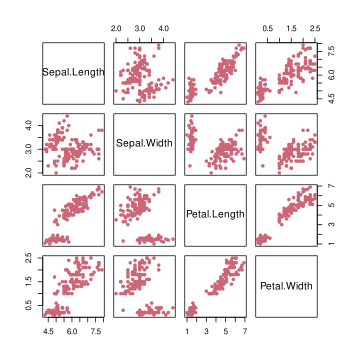
Tralasciamo invece l’approccio bayesiano, più complesso.
5.5.1 Esercizi
Ripetere le osservazioni fatte sopra considerando separatamente ciascuna specie (selezionare le prime 50 righe per la prima specie, le ulteriori 50 per la seconda e le ultime 50 per la terza).
Si scarichino dalla pagina del progetto Pageview stats, https://pageviews.toolforge.org/, i dati relativi alle visualizzazioni di \(4\) pagine di Wikipedia che si possano ritenere correlate (ad esempio si parta da una pagina e si considerino poi il primo collegamento da essa, oppure i primi due, e si ripeta). Si calcoli la correlazione empirica e la si visualizzi graficamente.
5.6 Analisi delle componenti principali (PCA)
Consideriamo in questa sezione un problema tipico del caso vettoriale, che si può affrontare con tecniche simili a quelle introdotte sopra (ossia usando medie e varianza campionarie e stima di massima verosimiglianza). Il problema è di “ridurre la dimensionalità” (in inglese dimension reduction) di una variabile \(Y \in \R^d\) (o similmente di un certo numero \(n\) osservazioni di tale variabile), con \(d\) molto grande, ossia introdurre una variabile \(X \in \R^k\), con \(k\) molto più piccolo di \(d\) in modo da “riassumere” l’informazione di \(Y\) in modo efficace. Questo può essere utile per rappresentare graficamente \(Y\) (ad esempio se \(k=2\)) ma anche per velocizzare l’esecuzione di algoritmi che in dimensione alta possono risultare particolarmente lenti.
Per fare un’esempio concreto, la foto di un volto di una persona incontrata per caso può essere presentata come una variabile \(Y\) a valori in uno spazio molto grande (una dimensione per ogni pixel nell’immagine). Tuttavia quando noi osserviamo un volto ne facciamo automaticamente un “riassunto” tramite caratteristiche quali il colore degli occhi, della pelle, dei capelli ecc. La variabile \(X\) contiene un “riassunto” efficace di \(Y\) (per la nostra memoria, però, mentre per una stampante certamente è più utile direttamente la \(Y\)).
Il problema è presente in tantissimi ambiti scientifici e le tecniche per affrontarlo sono molteplici. Una delle tecniche più semplici, ma comunque efficace, è l’analisi delle componenti principali (in inglese principal component analysis, abbreviato PCA). Dal punto di vista astratto la PCA si può spiegare in modo semplice ricordando il procedimento di standardizzazione di un vettore aleatorio. Data \(Y \in \R^d\), la matrice delle covarianze \(\Sigma_Y\) può essere diagonalizzata tramite il teorema spettrale, ossia esiste \(U_Y \in \R^{d\times d}\) ortogonale (\(U^T_Y = U^{-1}_Y\)) tale che \[ U_Y \Sigma_Y U^T_Y = D_Y\] è diagonale (e contiene gli autovalori di \(\Sigma_Y\)). Dal punto di vista delle variabili, questo significa che tramite un cambio di coordinate, ossia definendo \(Y' = U_Y Y\), la matrice delle covarianze di \(Y'\) è diagonale, e quindi le componenti non sono correlate. A questo punto, volendo “riassumere” \(Y\), si definisce \(X \in \R^k\) come la variabile congiunta delle \(k\) coordinate di \(Y'\) che hanno varianza maggiore. Si riassume quindi \(Y\) catturandone il sottospazio di dimensione \(k\) che presenta maggiore “variabilità” dal punto di vista della covarianza. La variabile \(X\) si ottiene proiettando \(Y\) su tale sottospazio, ossia algebricamente mediante una matrice di proiezione ortogonale \(\Pi_Y \in \R^{k \times d}\), e vale quindi \[ X = \Pi_Y Y.\]
L’idea teorica descritta sopra solleva almeno due problemi, uno pratico e uno teorico: 1. spesso si dispone solamente di un certo numero \(n\) di osservazioni \((y_1, \ldots, y_n)\) associate a variabili aleatorie \((Y_1, \ldots, Y_n)\), tutte indipendenti tra loro e con la stessa legge di \(Y\). Come stimare \(\Pi_Y\)? 2. la PCA è una procedura ad-hoc per questo problema oppure si può giustificare mediante le regole del calcolo della probabilità?
Una soluzione per il primo problema è immediata: invece di considerare la matrice delle covarianze teorica \(\Sigma_Y\) (che non è nota), partendo dalle osservazioni \(y = (y_1, \ldots, y_n)\), si procede allo stesso modo partendo però dalla matrice delle covarianze campionarie, \[\Sigma_{y} = \frac 1 n \sum_{i=1}(y_i-\bar{y})(y_i-\bar{y})^T.\] Ricordiamo infatti che è una matrice simmetrica e semi-definita positiva. Il teorema spettrale applicato \(\Sigma_y\) determina allora una matrice ortogonale \(U_y \in \R^{d\times d}\) e una matrice diagonale \(D_y \in \R^{d\times d}\) (contenente gli autovalori di \(\Sigma_y\)) tali che \[ U_y \Sigma_y U_y^T = D_y.\] A questo punto, si definisce \(\Pi_y \in \R^{k \times d}\) come la matrice di proiezione nel sottospazio associato alle direzioni dei \(k\) vettori di \(U_y\) per cui le componenti nella diagonale (le varianze) sono il più grande possibile. Il “riassunto” in questo caso non è una variabile \(X\) ma il vettore delle osservazioni proiettate \(x_i = \Pi_y y_i\) (anche se tipicamente ciò che interessa sono il sottospazio su cui si proietta e gli autovalori associati).
Applichiamo la PCA in R usando la funzione specifica prcomp() (in alternativa, la decomposizione spettrale di una matrice si può ottenere in generale tramite il comando eigen()). Vediamo ad esempio sul dataset Iris (applicandolo solo ai dati numerici, escludendo la colonna della specie) :
iris_PCA =prcomp(iris[,1:4])
L’oggetto risultate contiene diverse informazioni sulla PCA, come ad esempio la base di vettori \(U\) (che è una matrice \(4\times 4\) in questo caso),
e le deviazioni standard delle varie componenti (ossia la radice quadrata dei vari autovalori della matrice delle covarianze empirica \(\Sigma_y\), o della sua diagonalizzata \(D_y\)).
iris_PCA$sdev
[1] 2.0562689 0.4926162 0.2796596 0.1543862
Inoltre vi sono già calcolate tutte le osservazioni trasformate tramite la matrice \(U\), ossia una matrice che contiene i vettori \(Uy_i\) (come righe). Di questa possiamo ad esempio plottare la prima colonna (corrispondente alla direzione con varianza massima), o le prime due. La PCA ha l’effetto in questo caso di ben separare le tre specie, o quanto meno la prima dalle altre due, come evidenziamo con la diversa colorazione.
plot(iris_PCA$x[,1:2], col = miei_colori[as.numeric(iris$Species)], pch=16)
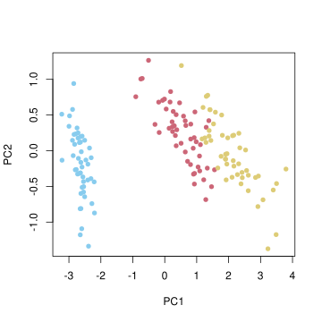
Veniamo alla seconda domanda, e mostriamo che è possibile giustificare il metodo di PCA in termini di una stima di massima verosimiglianza per un opportuno modello gaussiano. L’idea è che con la PCA stiamo recuperando un “segnale” (la \(X\)) osservandone una versione “rumorosa” e disposta su un sottospazio non noto.
Per introdurre un modello probabilistico, supponiamo fissata (e nota) la dimensione \(k\) introduciamo una variabile standardizzata \(Z \in \R^k\) e imponiamo che valga \[Y = AZ+W,\] dove \(A \in \R^{d \times k}\) è una matrice non nota (rispetto all’informazione priori). Il “segnale” da ricostruire è quindi \(AZ\) (quello che nella PCA abbiamo chiamato \(X\)) e \(W\) è una variabile che rappresenta il “rumore” aggiunto. Supponiamo che \(Z\), \(W\) siano indipendenti con densità gaussiane centrate e, oltre a \(\Sigma_Z = Id\), supponiamo che \(\Sigma_W = \sigma_0^2 Id\), per una costante opportuna (nota a priori e sufficientemente piccola). Supponendo nota la matrice \(A\), allora la densità di \(Y\), è anch’essa una gaussiana centrata, con covarianza \(\Sigma_Y = AA^T + \sigma_0^2 Id\), chè è una funzione di \(A\). Pertanto la verosimiglianza di \(A\) associata ad \(Y\) si scrive \[L(A; y) = p(Y=y | A) \propto \exp\bra{ - \frac 1 2 \bra{ y^T \sigma_Y^{-1} y + \log(\det(\Sigma_Y)) }}.\] Ovviamente, se invece di una singola osservazione \(Y=y\), supponiamo di avere \(n\) osservazioni indipendenti \(Y_i= y_i\), tutte gaussiane con gli stessi parametri – in particolare con la stessa matrice \(A\), la verosimiglianza si ottiene come prodotto della funzione sopra (cambiando i valori osservati) \[ L(A; y_1, \ldots, y_n) \propto \exp\bra{ - \frac n {2} \bra{ \frac 1 n\sum_{i=1}^n y_i^T \Sigma_Y^{-1} y_i + \log(\det(\Sigma_Y)) }}.\] Per stimare \(A\) si tratta quindi di determinare \(A \in \R^{d \times k}\) tale che la quantità sopra sia massima, ossia (passando al solito all’opposto del logaritmo e minimizzando) \[ A \mapsto \frac 1 n\sum_{i=1}^n y_i ^T \Sigma_Y^{-1} y_i + \log(\det(\Sigma_Y)\] sia minima (ricordiamo che \(\Sigma_Y\) dipende da \(A\)). Riconosciamo quindi una variante del problema della stima dei parametri di una densità gaussiana vettoriale a partire da osservazioni indipendenti, dove stavolta la dipendenza dei parametri (ossia \(A\)) è più complessa. Tuttavia, con qualche passaggio di algebra lineare e calcolo in più variabili si può dedurre che la stima di massima verosimiglianza per \(A\) è data da \[ A_{{\mle}} = U_{y|k} (D_{y|k} - \sigma^2_0Id)^{1/2},\] dove \(U_{y|k} \in \R^{d \times k}\) indica la matrice corrispondente ai \(k\) autovettori della covarianza campionaria \(\Sigma_y = \sum_{i=1}^n y_i y_i^T\) con autovalori più grandi, e \(D_{y|k} \in \R^{k\times k}\) indica la matrice diagonale contenente tali autovalori nell’ordine corrispondente. Tutto questo purché \(\sigma_0^2\) sia sufficientemente piccolo, affinché la diagonale di \(D_{y|k} - \sigma^2_0 Id\) sia positiva, altrimenti la radice quadrata (intesa solamente sulla diagonale) non avrebbe senso. Nel limite \(\sigma_0 \to 0\) si ottiene che \(A_{{\mle}}= U_{y|k} D_{y|k}^{1/2}\) e la variabile \(A_{{\mle}}X\) si identifica con \(\Pi_y Y\) (identificando \(\R^k\) con il sottospazio generato dai \(k\) vettori delle colonne di \(U_{y|k}\)).
5.6.1 Esercizi
Si consideri il dataset ‘mtcars’ contenente dati relativi ad alcuni modelli di auto (ormai d’epoca). Si usi opportuni comandi R per calcolare e visualizzare la matrice delle correlazioni campionarie e successivamente si applichi la PCA e si plotti un diagramma a nuvola di punti relativo alle prime due componenti principali.
Si consideri un dataset ricavato dalle visualizzazioni di pagine di Wikipedia (https://pageviews.toolforge.org/) costruito come nell’esercizio della sezione precedente. Si applichi la PCA e si plotti un diagramma a nuvola di punti relativo alle prime due componenti principali.
5.7 Regressione (metodo dei minimi quadrati)
In questa sezione introduciamo il problema generale della regressione, concentrandoci in particolare sul caso lineare con errore quadratico, tradizionalmente detto anche metodo dei minimi quadrati (ordinary least squares, OLS, in inglese).
Il problema della regressione, in generale, si può descrivere nel seguente modo: date due variabili aleatorie \(X \in E\), \(Y \in E'\) determinare una funzione \(g: E \to E'\) tale che \(Y\) sia “molto vicina” a \(g(X)\), \[ Y \sim g(X),\] a partire dall’osservazione congiunta di \((X,Y)\) (sottoforma di una o più copie, solitamente indipendenti). La variabile \(X\) è detta predittore (in inglese predictor) o variabile esplicativa (explanatory variable), mentre la variabile \(Y\) è detta risposta (response) oppure esito (outcome). Evitiamo appositamente il linguaggio trazionale di variabile “indipendente” (che sarebbe la \(X\)) e “dipendente” (la \(Y\)) per evitare di confonderlo con il concetto probabilistico di indipendenza.
In molte applicazioni, \(X\) è una variabile vettoriale, ossia \(E=\R^d\) (se \(d >1\) si parla di regressione multipla), mentre a seconda dell’obiettivo che ci si pone, \(Y\) potrebbe anche essere una variabile discreta (noi ci concentreremo al caso in cui sia una varibile continua, eventualmente anch’essa vettoriale).
La regressione si usa anche per problemi di classificazione, in cui ad esempio bisogna “etichettare” i possibili valori di \(X\) per determinare due (o più) classi disgiunte e quindi la variabile di risposta \(g(X)\) è discreta a valori nell’insieme delle possibili etichette.
Dal punto di vista del calcolo delle probabilità, essendo l’incognita \(g\) non nota e di solito non completamente determinata dall’osservazione di \((X,Y)\), si introduce una variabile aleatoria \(G\) a valori nell’insieme delle possibili funzioni da \(E\) in \(E'\). Il problema diventa quindi determinare la legge di \(G\) sulla base dell’informazione a priori \(I\) e dei dati osservati, ossia \((X,Y)\). La regressione generalizza quindi in senso probabilistico il concetto di “curva interpolante”, o più in generale il problema di determinare una funzione il cui grafico passi per determinati punti \((x,y)\). Questa generalizzazione avviene almeno su due fronti: 1. da un lato \(G\) non è una singola funzione ma una densità di probabilità sulle funzioni (ovviamente poi si dovrà scegliere una stima, ad esempio tramite massima verosimiglianza, ossia la funzione \(g\) tale che la probabilità di osservare \(G=g\) sia massima) 2. dall’altro si introduce una ulteriore flessibilità non richiedendo che la curva interpoli esattamente i punti osservati, ma introducendo un certo “residuo” (o errore), definito spesso come la differenza tra \(Y\) e \(G(X)\) ossia \(Y-G(X)\).
Pertanto, almeno in teoria, tutto il problema si riduce, come in altre situazioni, a specificare una densità a priori per la variabile aleatoria \(G\) e usare la formula di Bayes per stimarla dopo le osservazioni \((X,Y)\), o in alternativa usare la stima di massima verosimiglianza. Tuttavia, in pratica, l’insieme delle funzioni da \(E\) in \(E'\) è troppo grande per essere trattato agevolmente (sia numericamente che analiticamente), e perciò si specifica un modello, ossia una opportuna famiglia parametrizzata di funzioni da \(E\) in \(E'\). Questo fatto può anche essere visto come un modo di introdurre una certa informazione a priori sulla struttura della funzione, non nota, ma neppure totalmente arbitraria.
Tecnicamente, per specificare un modello si suppone che la variabile aleatoria \(G\) (a valori nelle funzioni da \(E\) in \(E'\)) sia una variabile composta tramite un “parametro” \(U\) (che possiamo supporre aleatorio, essendo non noto a priori), solitamente a valori in uno spazio vettoriale \(\R^k\) con dimensione \(k\), piccola rispetto alla dimensione dello spazio di tutte le possibili funzioni. Pertanto, per ogni possibile valore \(U=u\) del parametro, è definita una funzione \(g( \cdot ; u): E \to E'\) che ad ogni \(x \in E\) associa \(g(x; u) \in E'\). Per chiarire le idee, vediamo degli esempi fondamentali.
L’esempio piu semplice, su cui ci soffermeremo maggiormente, è il caso in cui \(E' = \R^{d'}\) e la funzione \(G\) sia lineare nel parametro \(U\in \R^k\), cioè che l’associazione \[ u \in \R^k \mapsto g( \cdot ; u) \] sia lineare, della forma \[ g(x; u) = \sum_{i=1}^k g_i(x) u_i\] per opportune funzioni (note e fissate a priori) \(g_i: E \to E' = \R^{d'}\). Notiamo che le singole funzioni \(g_i\), \(x \mapsto g_i(x)\), possono essere anche non lineari, come ad esempio \(g(x) = x^2\), anche se in molti casi pure lo sono. Il punto è che si può sempre considerare, al posto della variabile esplicativa \(X\), la variabile congiunta \(X' = (g_i(X))_{i=1}^k\), in modo che quindi si possa scrivere la dipendenza come se fosse lineare, \[ g(x; u) = \sum_{i=1}^k x_i' u_i.\] Ad esempio, il modello \[g(x; (u_1, u_2)) = u_1 x+ u_2 x^2\] è lineare (in \(u\)) ma non in \(x\), tuttavia diventa lineare se lo si pensa in termini della nuova variabile \(X' = (X, X^2)\).
Un altro punto che non viene spesso evidenziato è che anche un modello “affine” ossia \[ g(x; u) = u_0 + \sum_{i=1}^k x_i u_i \] è in realtà lineare, perché lo è nella variabile \(u = (u_0, u_1, \ldots, u_k)\), mentre alle \(g_i = x_i\) va aggiunta la \(g_0 = 1\) costante.
Un esempio di modello non lineare si ottiene componendo un modello lineare tramite una funzione non lineare, come ad esempio la funzione logistica (detta anche sigmoide per la forma del grafico) \(\ell: \R \to (0,1)\), \[\ell(z) = \frac{1}{1+e^{-z}}.\]
Si ottiene pertanto un modello della forma \[ g(x; u) = \ell\bra{ \sum_{i=1}^k g_i(x) u_i} = \frac{1}{1+\exp\bra{-\sum_{i=1}^k g_i(x) u_i}}. \] per delle opportune funzioni \(g_i(x)\). La regressione basata su tali modelli è detta appunto logistica e viene spesso usata per problemi di classificazione binaria (ossia per partizionare i valori di \(X\) in due classi, corrispondenti a \(\cur{Y\le 1/2}\) e \({Y>1/2}\).
Presentiamo ora il classico metodo dei minimi quadrati con la notazione introdotta sopra: si suppone \(Y \in E' = \R^{d'}\) e \(U \in \R^k\), per cui si può introdurre, come misura dell’errore nell’approssimazione di \(Y\) mediante \(g(X;U)\) la differenza \(Y-g(X;U)\), detta anche residuo. Il metodo consiste quindi, avendo osservato \(X=x\), \(Y=y\), nel determinare un valore del parametro che minimizzi il “residuo quadratico”, ossia \[ u_{\ols} \in \operatorname{arg} \min_{u \in \R^k} |y - g(x; u)|^2,\] Più in generale, di solito si dispone di \(n\) osservazioni indipendenti di coppie di variabili \((X_i,Y_i) =(x_i,y_i)\) per cui si suppone che il parametro \(U\) da stimare sia lo stesso, ossia \(Y_i \sim g(X_i, U)\), allora il metodo consiste nel minimizzare la somma dei residui quadratici: \[ u_{\ols} \in \operatorname{arg} \min_{u \in \R^k}\sum_{i=1}^n |y_i - g(x_i; u)|^2.\] Il metodo indica anche, come stima della “varianza” del residuo tipico \(Y-g(X; u_{\ols})\), la quantità detta anche errore quadratico medio (in inglese mean squared error, MSE) \[ \frac 1 n \sum_{i=1}^n |y_i - g(x_i; u_{\ols})|^2,\] anche se, come per la varianza campionaria, il denominatore \(n\) è solitamente sosituito con il numero \(n-k\) di “gradi di libertà” per ottenerne una stima “non distorta” (unbiased) – questo non cambia molto fintanto che il numero dei parametri \(k\) è molto più piccolo del numero delle osservazioni \(n\), cosa che avviene solitamente.
Consideriamo il caso di \(X\), \(Y\) a valori reali e un modello lineare parametrizzato da \(u=(a,b) \in \R^2\), ossia \[ g(x; u) = ax +b\] Per il metodo dei minimi quadrati, avendo \(n\) osservazioni indipenenti (supponendole tutte con il medesimo parametro \((a,b)\) da stimare) si deve quindi minimizzare la somma dei residui \[ \sum_{i=1}^n (y_i - a x_i -b)^2,\] come funzione di \((a,b)\). Imponendo che le derivate si annullino si trova un semplice sistema (lineare) nelle incognite \(a\), \(b\), che risolto permette di determinare \[ a_{\ols} = \frac{ \sum_{i=1}^n(y_i - \bar{y})(x_i - \bar{x})}{ \sum_{i=1}^n (x_i- \bar{x})^2} = \frac{ \Sigma_{xy}}{\Sigma_{xx}}\] avendo indicato con \(\Sigma\) le covarianze campionarie, e \[ b_{\ols} = \bar{y} - \frac{ \Sigma_{xy}}{\Sigma_{xx}} \bar{x}.\] In particolare, notiamo che il segno di \(a_{\ols}\) coincide con quello della covarianza campionaria \(\Sigma_{xy}\) (essendo la varianza a denominatore sempre positiva). Recuperiamo quindi il significato di positiva (o negativa) correlazione in termini della “concentrazione” della densità della variabile congiunta \((X,Y)\) intorno ad una retta con coefficiente angolare positivo (o negativo). Si può anche esprimere in alternativa \[ a_{\ols} = \rho_{xy} \frac{\sigma_y}{\sigma_x}, \quad b_{\ols} = \bar{y} - \rho_{xy} \frac{ \sigma_y}{\sigma_x} \bar{x}\] usando il coefficiente di correlazione e le deviazioni standard campionarie \[ \sigma_x = \sqrt{ \Sigma_{xx}}, \quad \sigma_y = \sqrt{ \Sigma_{yy}}, \quad \rho_{xy} = \frac{\Sigma_{xy}}{\sigma_x \sigma_y}.\]
In R la regressione su un modello lineare è implementata tramite la funzione lm(). Vediamo un esempio basandoci sulle osservazioni del dataset Iris. Si vuole predire la lunghezza del sepalo (prima colonna) a partire da quella del petalo (terza colonna). Il parametro di intercetta \(b\) è aggiunto automaticamente, non serve specificarlo.
# la funzione y = u_0 + u_1x_1 + ... + u_k x_k è specificata introducendo una formula del tipo y ~ x1 + x2+ ... + xk, dove le xi sono le colonne del data frame. Non serve specificare l'intercetta perché è introdotta automaticamente. (Per formule complicate vi sono anche altri modi di inserirle)x = iris$Petal.Lengthy = iris$Sepal.Lengthiris_reg_lin =lm( y ~ x )# L'output della funzione è una lista contenente diverse informazioni utili, tra cui i coefficientiiris_reg_lin$coefficients
(Intercept) x
4.3066034 0.4089223
# i residui y_i - g(x_i, u), che possiamo plottare con un istogrammahist(iris_reg_lin$residuals, col=miei_colori[1], probability =TRUE, xlab="residui", ylab="densità")
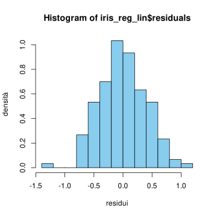
# e i valori "previsti" dal modello con i parametri ottenuti, che possiamo plottare accanto a quelli osservatiplot( x,y, type='p', pch=16, col=miei_colori[1], xlab ='lunghezza del petalo', ylab='lunghezza del sepalo')points( x, iris_reg_lin$fitted.values, pch=16, col=miei_colori[2])legend('bottomright', fill=miei_colori[1:2], legend=c("osservati", "previsti"))# possiamo anche aggiungere una linea per meglio rappresentare la retta interpolante del modello con il comando abline()abline(iris_reg_lin$coefficients, col=miei_colori[2], lwd=2)
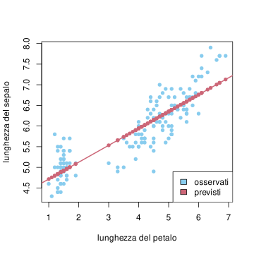
# introduciamo un data frame con le nuove osservazioni di lunghezze di petalix_osservati =data.frame( x=c(2, 2.2, 2.5, 3))y_previsti =predict(iris_reg_lin, x_osservati)# rappresentiamo le previsioni in un nuovo plotplot( x,y, type='p', pch=16, col=miei_colori[1], xlab ='lunghezza del petalo', ylab='lunghezza del sepalo')points( x_osservati$x, y_previsti, pch=16, col=miei_colori[2])legend('bottomright', fill=miei_colori[1:2], legend=c("osservazioni", "previsioni"))# notiamo che sono tutti sulla retta di regressione abline(iris_reg_lin$coefficients, col=miei_colori[2], lwd=2)
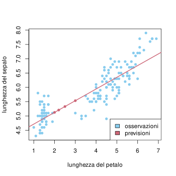
Consideriamo ora un modello lineare più generale (multipla), in cui \(X \in\R^d\), \(U \in \R^{k}\), \(Y \in \R\) e \[ g(x; u) = \sum_{j=1}^k x_j u_j = x \cdot u,\] indicando con \(\cdot\) il prodotto scalare in \(\R^k\) per alleggerire la notazione. Avendo osservato \(X_i= x_i\), \(Y_i =y_i\) per \(i= 1, \ldots, n\), il metodo dei minimi quadrati consiste nel minimizzare la funzione \[ u \mapsto \sum_{i=1}^n (y_i - x_i \cdot u)^2,\] che è una funzione quadratica nelle variabili \(u = (u_j)_{j=1}^k\). Pertanto, imponendo che le derivate parziali si annullino si ottiene un sistema lineare (di \(k\) equazioni in \(k\) incognite) che ammette come soluzione esplicita il vettore \[ u_{\ols} = (x^T x)^{-1} x^Ty,\] dove \(x \in \R^{n \times d}\) è intesa come matrice le cui righe sono le osservazioni \(x_i \in \R^d\) e si suppone che la matrice \(x^Tx\in \R^{d \times d}\) sia invertibile. (tale matrice è gioca un ruolo simile alla matrice delle covarianze campionarie). La previsione è quindi data dalla funzione \[ z \mapsto g(z, u_{\ols}) = z \cdot (x^T x)^{-1} x^Ty.\]
Il comando lm() permette di effettuare regressione lineare multipla in dimensione arbitraria. Ad esempio, possiamo considerare come predittori della lunghezza del sepalo nel dataset Iris tutte le variabili (eccetto la specie).
iris_reg_gen =lm( Sepal.Length ~ Sepal.Width +Petal.Length + Petal.Width, data = iris)# Possiamo avere un "riassunto" della regressione con il comando summary()summary(iris_reg_gen)
Call:
lm(formula = Sepal.Length ~ Sepal.Width + Petal.Length + Petal.Width,
data = iris)
Residuals:
Min 1Q Median 3Q Max
-0.82816 -0.21989 0.01875 0.19709 0.84570
Coefficients:
Estimate Std. Error t value Pr(>|t|)
(Intercept) 1.85600 0.25078 7.401 9.85e-12 ***
Sepal.Width 0.65084 0.06665 9.765 < 2e-16 ***
Petal.Length 0.70913 0.05672 12.502 < 2e-16 ***
Petal.Width -0.55648 0.12755 -4.363 2.41e-05 ***
---
Signif. codes: 0 '***' 0.001 '**' 0.01 '*' 0.05 '.' 0.1 ' ' 1
Residual standard error: 0.3145 on 146 degrees of freedom
Multiple R-squared: 0.8586, Adjusted R-squared: 0.8557
F-statistic: 295.5 on 3 and 146 DF, p-value: < 2.2e-16
Con la funzione summary() usata nell’esempio sopra si leggono anche altre informazioni rilevanti, come la stima della deviazione standard dei residui (detta anche errore standard dei residui, in inglese residual standard error) definita come la radice quadrata della versione “non distorta” dell’errore quadratico medio, \[ s = \sqrt{ \frac{1}{n-k} \sum_{i=1}^n|y_i - x_i \cdot u_{\ols}|^2}.\] Inoltre, ciascun parametro stimato, ossia ogni componente del vettore \(u_{OLS}\) è accompagnato da una stima della deviazione standard (visibile nella seconda colonna Std. Error, accanto a quella contenente la stima Estimate), definito per la componente \(j \in \cur{1, \ldots, k}\) come la quantità \[ s_j = s \sqrt{ (x^Tx)^{-1}_{jj}}.\]
Osservazione (varianza spiegata). Una quantità spesso utilizzata per valutare l’efficacia della regressione è il coefficiente di determinazione (in inglese coefficient of determination) definito come \[ R^2 = 1- \frac{ \sum_{i=1}^n |y_i -x_i \cdot u_{\ols}|^2}{ \sum_{i=1}^n |y_i - \bar{y}|^2},\] dove riconosciamo (a meno di moltiplicare per \(1/n\) numeratore e denominatore) l’errore quadratico medio e la varianza campionaria. Esso è una quantità minore (o uguale) ad \(1\), e misura l’aderenza del modello lineare ai dati osservati, confrontandolo con il caso di un modello “costante” (per cui si otterrebbe come miglior funzione la media campionaria). Più \(R^2\) risulta vicino ad \(1\), migliore è l’aderenza ai dati osservati. Se nel modello lineare è inclusa la funzione costante, come è automatico nella funzione lm(), allora si può mostrare che \(R^2\) è anche non negativo, quindi sempre compreso tra \(0\) ed \(1\). In questo senso si intepreta come la “percentuale” di varianza (dei dati) spiegata dal modello lineare preso in considerazione.
Idealmente si vorrebbe \(R^2\) molto grande, ma bisogna prestare attenzione al fatto che una aderenza eccessiva ai dati, ossia \(R^2\) troppo vicino ad \(1\) potrebbe essere un segnale di overfit, in cui i parametri introdotti sono troppi (ossia la dimensione \(k\) è troppo grande in confronto al numero di osservazioni \(n\)) e la funzione stimata “insegue” le osservazioni senza veramente “imparare” nulla da esse, ossia fornendo previsioni poco efficaci se testato nuove osservazioni della variabile dipendente. Per superare parzialmente questo problema, si usa una versione “aggiustata” del coefficiente (in inglese adjusted\(R^2\)), anch’essa indicata nel comando summary()
Per meglio comprendere il metodo dei minimi quadrati, ne vediamo ora una intepretazione in termini di stima di massima verosimiglianza. Questo, oltre a dare una giustificazione teorica basata sul calcolo delle probabilità permette anche di comprendere meglio alcune ipotesi che ne permettono una applicazione corretta.
Con la notazione sopra, introduciamo un modello probabilistico tale che, rispetto ad una informazione a priori (prima delle osservazioni), \(X \in E\), \(Y \in E = \R^{d'}\), \(U \in \R^k\) siano variabili aleatorie per cui \[ Y = g(X;U) + W,\] dove \(W\) è una variabile (indicante il residuo) con densità gaussiana vettoriale \(\mathcal{N}(0, v Id)\) (dove \(v>0\) è un parametro), e che le tre variabili \(X\), \(U\) e \(W\) siano tra loro indipendenti. Solamente con queste ipotesi, qualsiasi sia la densità a priori di \(X\), si ottiene come funzione di verosimiglianza \[ \begin{split} L(u ; x, y) & = p(X=x, Y=y | U = u) \\
&= p(Y=y| U=u, X=x) p(X=x| U=u)\\
& = p( Y-g(x;u) = y-g(x;u) | U=u, X=x) p(X=x) \\
& = p( W = y-g(x,u) | U=u, X=x) p(X=x)\\
& = \exp\bra{ -\frac 1 {2v} |y-g(x,u)|^2 }\frac{1}{\sqrt{ 2 \pi v}} p(X=x).
\end{split}\] Avendo osservato \(X=x\), \(Y=y\), la stima di massima verosimiglianza per \(U\) consiste quindi nel determinare il minimo della quantità \[ u \mapsto |y-g(x,u)|^2, \] ossia il minimo residuo quadratico. Similmente, se invece si dispone di \(n\) variabili \((X_i, W_i)\) tutte indipendenti tra loro (e indipendenti da una variabile \(U\)) tali che, per ogni \(i=1, \ldots, n\) valga \[ Y_i = g(X_i; U) + W_i,\] allora la funzione di verosimiglianza per \(U\) associata alle osservazioni \(X_i= x_i\), \(Y_i = y_i\) diventa, con calcoli analoghi e scrivendo per brevità \(x = (x_i)_{i=1}^n\), \(y= (y_i)_{i=1}^n\), \[ \begin{split} L(u ; x, y) & = p(X=x, Y=y | U = u) \\
& = \exp\bra{ -\frac 1 {2 v} \sum_{i=1}^n |y_i-g(x_i,u)|^2 }\frac{1}{\sqrt{ (2 \pi v)^n}} \prod_{i=1}^n p(X_i=x_i).\end{split}\] E quindi, qualsiasi sia la densità di \(X_i\) (anche non necessariamente la stessa per tutte le osservazioni) si trova che la stima di massima verosimiglianza per \(U\) è tale che la funzione \[ u \mapsto \sum_{i=1}^n |y_i-g(x_i,u)|^2,\] sia minima, quindi la stima \(u_{\ols}\) indicata dal metodo dei minimi quadrati.
Inoltre, poiché nelle espressioni sopra abbiamo mantenuta esplicita la dipendenza dal parametro \(v\) (la varianza del residuo \(W\)), pensando la verosimiglianza anche come funzione di tale parametro, con gli stessi calcoli per la stima del parametro varianza di una gaussiana a partire da osservazioni indipendenti (è in effetti questa la situazione), otteniamo che la stima di massima verosimiglianza per la coppia \((u, v)\) è \[ u_{\mle } = u _{\ols} \in \arg \min_{u \in \R^k} \sum_{i=1}^n |y_i-g(x_i;u)|^2\] e l’errore quadratico medio (nella versione “distorta”) \[ v_{\mle} = MSE = \frac 1 n \sum_{i=1}^n |y_i-g(x_i;u)|^2.\]
Osservazione. La giustificazione sopra si basa essenzialmente sull’ipotesi (a priori) che i residui siano variabili gaussiane indipendenti con gli stessi parametri (e media nulla). Questa ipotesi non si può giustificare prima di applicare il metodo, tuttavia è possibile, dopo l’applicazione, considerarne la validità, almeno qualitativamente oppure tramite test (si veda la Sezione Sezione 5.8).
Questa derivazione del metodo dei minimi quadrati come stima di massima verosimiglianza suggerisce anche un approccio bayesiano, in cui una densità a priori su \(U\) possa racchiudere dell’informazione già nota sul problema. Ad esempio, supponiamo che sia noto a priori che \(U\) non si discosta troppo da un parametro noto \(u_0\), ad esempio con una variabilità dell’ordine di \(\sigma_u>0\) (lungo ciascuna componente) e che le componenti di \(U\) siano indipendenti tra loro. Questo si traduce nell’assumere che la densità a priori per \(U\) sia vettoriale gaussiana \(\mathcal{N}(u_0, \sigma_u^2 Id)\), e quindi la formula di Bayes darebbe, dopo \(n\) osservazioni \(X_i =x_i\), \(Y_i= y_i\) (con le ipotesi sopra di indipendenza) \[ \begin{split}& p(U = u | X_i=x_i, Y_i= y_i, \, \forall i=1, \ldots, n) \\
& \propto \exp\bra{ -\frac 1 {2\sigma_u^2} |u-u_0|^2} L(u; x, y)\\
& \propto \exp\bra{ -\frac 1 {2} \bra{ \frac 1 v \sum_{i=1}^n |y_i-g(x_i;u)|^2 +\frac 1 {\sigma_u^2} |u-u_0|^2}}\end{split}\] e quindi il massimo della densità a posteriori per \(U\) si ottiene minimizzando la funzione \[ u \mapsto \frac 1 v \sum_{i=1}^n |y_i-g(x_i;u)|^2 +\frac 1 {\sigma_u^2} |u-u_0|^2. \] Rispetto al metodo dei minimi quadrati, è stato quindi introdotto un termine di regolarizzazione (o penalizzazione) alla somma dei residui, che diventa rilevante se \(u\) è troppo lontano dal parametro \(u_0\). L’introduzione di questi ed altre funzioni è spesso utile per regolarizzare appunto la soluzione fornita dal semplice metodo dei minimi quadrati (queste tecniche hanno diversi nomi a seconda del tipo di termini che si aggiungono, ad esempio ridge, weight decay, LASSO, ecc.).
L’approccio bayesiano alla regressione si può approfondire analiticamente nel caso di modelli lineari. Supponendo che \(g(x;u) = x\cdot u\), la densità a posteriori per \(U\) diventa \[ \begin{split} p(U = u & | X_i=x_i, Y_i= y_i, \, \forall i=1, \ldots, n) \\
& \propto \exp\bra{ -\frac 1 {2} \bra{ \frac 1 v \sum_{i=1}^n |y_i- x_i \cdot u|^2 +\frac 1 {\sigma_u^2} |u-u_0|^2}},\end{split}\] che è una densità gaussiana vettoriale (essendo un esponenziale di polinomio di secondo grado rispetto alla variabile \(u\)). Precisamente, con calcoli diretti che qui omettiamo, per isolare i termini lineari e quadratici rispetto alla variabile \(u\), si trova che \(U\) ha come nuovi parametri, avendo osservato \(X_i=x_i\), \(Y_i=y_i\) per \(i=1,\ldots, n\), il vettore dei valor medi \[ u_{|X=x,Y=y} = \bra{ x^T x + (v/\sigma_u^2)Id}^{-1} \bra{ x^T y + (v/\sigma_u^2) u_0}\] e la matrice delle covarianze \[ \Sigma_{U|X=x,Y=y} = v \bra{ x^T x + (v/\sigma_u^2)Id}^{-1}.\]
In particolare, la deviazione standard della componente \(j \in \cur{1, \ldots, k}\) del vettore dei parametri \(U\), si ottiene dal termine diagonale della matrice, \[\begin{split} \sigma_{U_j|X=x, Y=y} & = \sqrt{ \Var{U_j| X=x, Y=y}}
\\ & = \sqrt{v \bra{x^T x +(v/\sigma_u^2) Id}^{-1}_{jj}}.\end{split}\]
Queste formule sono un po’ più complicate della stima di massima verosimiglianza per \(U\), ma utilizzando anche l’informazione a priori e permettono di meglio quantificare l’incertezza associata alla stima puntuale.
Nelle formule per la varianza e la deviazione standard, il parametro \(v\) (la varianza di \(W\)) è qui trattato come noto, mentre per ottenere un’analisi più precisa dovrebbe essere pure una variabile aleatoria (abbiamo già discusso un problema simile trattando la stima della varianza di una gaussiana dalle osservazioni). Per semplificare parzialmente il metodo bayesiano, tuttavia si può qui sostituire a \(v\) la stima di massima verosimiglianza già trovata, ossia l’errore quadratico medio nella versione “distorta”.
Osserviamo infine che, nel limite \(v<<\sigma_u^2\) (quando l’informazione a priori su \(U\) diventa insignificante perché la densità tende ad essere “uniforme” su tutto \(\R^k\)), dalle formule sopra si recuperano la stima del metodo classico dei minimi quadrati per il modello lineare \[ u_{\ols} = (x^Tx )^{-1} x^T y\] e (avendo posto \(v\) la stima di massima verosimiglianza) gli errori standard dei parametri, per \(j \in \cur{1, \ldots, k}\), \[ \sigma_j = \sqrt{v \bra{x^T x}^{-1}_{jj}}.\] Questo conclude la giustificazione del metodo dal punto di vista del calcolo delle probabilità. L’unico punto non del tutto giustificato, è che abbiamo trovato così le quantità “distorte” invece di quelle “corrette” che si utilizzano comunemente, ma ripetiamo che per la numerosità delle osservazioni, \(n\), molto più grande del numero di parametri \(k\) la differenza non è poi così grande.
Osservazione (altre funzioni obiettivo). Vi sono certamente altre scelte ragionevoli e a volte preferibili alla funzione quadratica come funzione di costo (o obiettivo, in inglese loss function) da minimizzare. Una scelta utile in alcuni casi è ad esempio il valore assoluto, se \(E' = \R\), per cui si determina invece \[ u_{\operatorname{LAD}} \in \arg \min_{u \in \R^k}\sum_{i=1}^n |y_i - g(x_i; u)|.\] (questo metodo è detto di least absolute deviation in inglese). Per intepretare anche queste varianti del metodo dei minimi quadrati come stime di massima verosimiglianza (oppure per introdurre termini di penalizzazione non quadratici) basta sostituire alle densità gaussiane dei residui \(W_i\) (oppure dei parametri \(U\)) opportune densità, il cui logaritmo sia proporzionale alla funzione di costo. Ad esempio per il valore assoluto, si usa quindi la densità, detta di Laplace, \(p (W = w ) \propto \exp\bra{- \frac{|w-w_0|}{b}}\) dove \(w_0\in \R\) e \(b>0\) sono opportuni parametri.
5.7.1 Esercizi
Si consideri il dataset ‘mtcars’ e si effettui una regressione lineare con \(X\) data dalla potenza (colonna ‘hp’) e \(Y\) il tempo impegato per percorrere un quarto di miglio da ferma (colonna ‘qsec’). Aggiungere la retta trovata allo scatterplot e verificare che essa aderisca ai punti. Quale dovrebbe essere la potenza prevista dal modello di un auto affinché percorra il quarto di miglio in 10 secondi? Si confronti la previsione quanto effettivamente accade nella realtà delle auto più veloci in produzione (https://en.wikipedia.org/wiki/List_of_fastest_production_cars_by_acceleration)
5.8 Sull’ipotesi di gaussianità
Abbiamo visto nelle due precedenti sezioni come l’introduzione di opportune variabili gaussiane e la successiva applicazione della formula di Bayes o la stima di massima verosimiglianza permetta di intepretare metodi come la PCA o i minimi quadrati in termini probabilistici. Oltre all’intepretazione, questo permette di chiarire le ipotesi sottostanti per garantire, almeno in teoria, una corretta applicazione del metodo. Ad esempio, nel caso dei minimi quadrati, (almeno) i residui devono avere densità gaussiane.
Rimane tuttavia il problema di argomentare che \(n\) osservazioni \((x_i)_{i=1}^n\) di dati dalla realtà possano essere ragionevolmente modellizate tramite eventi del tipo \(X_i =x_i\), dove le variabili aleatorie \(X_i\) siano gaussiane indipendenti, tutte con gli stessi parametri2.
Vi sono diversi approcci, ma si possono riassumere in essenzialmente due categorie: 1. Approcci qualitativi: si sfruttano teoremi limite, come la legge dei grandi numeri (ossia validi per la numerosità \(n\) molto grande) i quali garantiscono che determinate variabili empiriche, ossia dipendenti dalle osservazioni \((x_i)_{i=1}^n\) siano vicine in un senso opportuno, a variabili gaussiane di opportuni parametri. In questa categoria rientrano il confronto tra l’istogramma dei valori osservati a cui si sovrapponga la densità gaussiana stimata.
# Vediamo un esempio in cui è ragionevole l'ipotesi di gaussianità (i residui del modello lineare applicato al dataset Iris) e confrontiamolo con un esempio in cui invece l'ipotesi non lo sia (le osservazioni della lunghezza dei petali).par(mfrow =c(1,2))iris_res = iris_reg_lin$residualshist(iris_res, col=miei_colori[1], freq =FALSE, xlab="valori dei residui", main="")# aggiungiamo il grafico della densità gaussiana con i parametri stimati dalle osservazioni (media e deviazione standard campionarie)z =seq(min(iris_res), max(iris_res), by=0.01)norm_dens=dnorm(z, mean =mean(iris_res), sd=sd(iris_res) )lines( z, norm_dens, lwd =3, col=miei_colori[2] )## vediamo invece lo stesso con la lughezza dei petaliiris_petali = iris$Petal.Lengthhist(iris_petali, col=miei_colori[3], freq =FALSE, xlab="lunghezza dei petali", main="")z =seq(min(iris_petali), max(iris_petali), by=0.01)norm_dens=dnorm(z, mean =mean(iris_petali), sd=sd(iris_petali) )lines( z, norm_dens, lwd =3, col=miei_colori[2] )
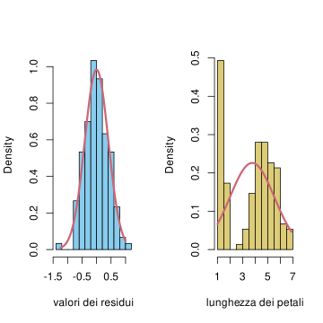
# notiamo una buona aderenza dei dati alla densità teorica nel primo caso, e invece una notevole differenza nel secondo.
Un secondo metodo grafico è il Q-Q plot, in cui si confrontano la funzione quantile della variabile empirica, ossia la variabile uniforme discreta sugli \(n\) valori osservati, con la funzione quantile di una opportuna gaussiana – in tal caso, l’ipotesi di gaussianità è tanto più ragionevole quanto più i punti sul grafico siano allineati.
# per il Q-Q plot in R usiamo il comando qqnorm() che automaticamente confronta il quantile della variabile "empirica" con quello di una gaussiana par(mfrow =c(1,2))qqnorm(iris_res, col=miei_colori[1], pch=16)# per aggiungere la linea che si dovrebbe ottenere se l'ipotesi fosse vera (per opportuni parametri) usiamo il comando qqline()qqline(iris_res, col=miei_colori[2], lwd=2)# ripetiamo per la lunghezza dei petaliqqnorm(iris_petali, col=miei_colori[3], pch=16)qqline(iris_petali, col=miei_colori[2], lwd=2)
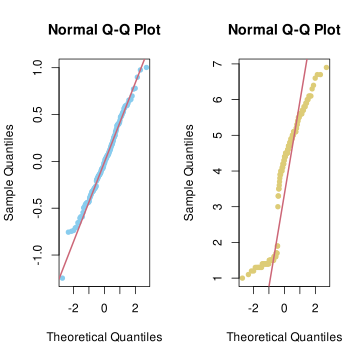
# nel primo caso la maggior parte dei punti è ben allineata alla retta, mentre nel secondo si discostano.
Approcci quantitativi: si introducono tuttavia dei test statistici in cui l’ipotesi nulla è l’evento (o meglio l’unione degli eventi al variare dei parametri di media e varianza) \(\mathcal{H}_0 =\) “le osservazioni provengono da \(n\) variabili gaussiane indipendenti, tutte con gli stessi parametri” e l’alternativa semplice \(H_1\) è la sua negazione. La descrizione specifica di questi test, in particolare dell’evento su cui si basa poi la decisione (rifiutare o meno) l’ipotesi nulla è troppo lunga, e la omettiamo. Ricordiamo però dal breve cenno ai test nella Sezione Sezione 2.7 che le quantità principali, in particolare il valore \(p\), sono calcolate rispetto alla probabilità condizionata alla validità dell’ipotesi nulla, pertanto si possono calcolare, almeno in linea di principio, perché l’ipotesi nulla riguarda densità gaussiane – il problema in questo caso sarebbe l’alternativa in cui non è chiaro quale densità considerare. In ogni caso, bisogna comunque prestare attenzione al fatto che un test statistico, pur essendo quantitativo non è una “dimostrazione” che l’ipotesi nulla sia vera (si usa appunto la locuzione non viene rifiutata per evitare di cadere in questa trappola concettuale). Ricordiamo infine che, più piccolo il valore \(p\), maggiore sarà il “grado di fiducia” che il test attribuisce nel rifiutare l’ipotesi nulla, quindi se il motivo per cui utilizziamo un test è di confermare, o meglio non smentire, l’ipotesi di gaussianità, il test sarà tanto più utile quanto più grande (ossia vicino ad \(1\)) è il valore \(p\). Vediamo degli esempi.
# Un test di gaussianità è dovuto a Shapiro (e Wilk). shapiro.test(iris_res)
Shapiro-Wilk normality test
data: iris_res
W = 0.99298, p-value = 0.6767
shapiro.test(iris_petali)
Shapiro-Wilk normality test
data: iris_petali
W = 0.87627, p-value = 7.412e-10
# vediamo come nel caso dei residui il p-value sia molto grande (0.67), mentre nel secondo il test rifiuta la gaussianità con un p-value estremamente piccolo.# Un test basato sulla funzione di ripartizione è dovuto a Kolmogorov e Smirnov. In realtà questo è un test che permette di confrontare anche con altre densità, non solo gaussiane, quindi dobbiamo specificare il parametro "pnorm" per il test di gaussianità (con altri parametri si può testare altre densità).ks.test(iris_res, "pnorm", mean=mean(iris_res), sd=sd(iris_res))
Asymptotic one-sample Kolmogorov-Smirnov test
data: iris_res
D = 0.040916, p-value = 0.9632
alternative hypothesis: two-sided
Asymptotic one-sample Kolmogorov-Smirnov test
data: iris_petali
D = 0.19815, p-value = 1.532e-05
alternative hypothesis: two-sided
# anche in questo caso il valore p è estremamente indicativo e conferma quanto osservato qualitativamente.
5.8.1 Esercizi
Si considerino le varie colonne del dataset ‘mtcars’ e si discuta se sia opportuno supporre che siano osservazioni di variabili gaussiane indipendenti. Lo stesso per i residui della regressione lineare della colonna ‘qsec’ rispetto alla colonna ‘hp’.
5.9 Approssimazione di Laplace
Concludiamo questo capitolo discutendo un problema leggermente diverso da quello della sezione precedente, ma in un certo senso collegato: data una variabile \(X \in \R^d\) di cui sappiamo che la densità non è gaussiana, in quale senso è possibile comunque approssimarla con una gaussiana? In questo modo ad esempio gli strumenti sviluppati per le variabili gaussiane si potrebbero applicare, tenendo conto dell’errore di approssimazione, anche ad altre densità.
Una soluzione particolarmente semplice e spesso efficace è l’approssimazione di Laplace, che consiste nello sviluppare al secondo ordine il logaritmo della densità di \(X\)\[ x \mapsto \log( p(X=x)),\] (supponendo che \(X\) ammetta una densità continua e abbastanza regolare), in un punto di massimo \(x_{{\max}}\) (ossia una moda della densità di \(X\)). Poiché il gradiente si annulla, si trova lo sviluppo \[ \begin{split} & \log( p(X = x) ) \\
& = \log( p(X= x_{{\max}})) + \frac 12 (x-x_{{\max}}) \cdot H(x_{{\max}}) (x-x_{{\max}}) + O( |x-x_{{\max}}|^3),
\end{split}\] dove \[ H(x) = \bra{ \frac{ \partial^2 \log (p(X=x))}{\partial x_i \partial x_j}}_{i,j=1}^d\] la matrice delle derivate seconde (detta anche hessiana). Essendo \(x_{{\max}}\) punto di massimo, \(H\) è una matrice (semi-)definita negativa. Supponendo che sia negativa, allora l’approssimazione di Laplace è data dalla densità gaussiana di valor medio \(x_{{\max}}\) e matrice delle covarianze \(- (H(x_{\max}))^{-1}\). L’utilità di questo metodo è che spesso, nel calcolare \(x_{{\max}}\) tramite opportuni metodi numerici si calcola anche la matrice hessiana (ad esempio con il metodo di Newton).
Va evidenziato tuttavia che non è garantita in generale che l’approssimazione sia vicina alla densità di \(X\), in particolare per valori \(x\) lontani da \(x_{{\max}}\). Vediamo degli esempi.
# Iniziamo con una densità non gaussiana ma piuttosto simile, deltax=0.01x=seq(0,1, by=deltax)densita = x^4*(1-x)^4densita = densita/sum(densita*deltax)plot(x,densita, type='l', lwd=3, col=miei_colori[1], ylab='densità')# calcoliamo il minimo dell'opposto del logaritmo della densità con la funzione nlm() -- questo si può anche fare a mano, ma poi lo possiamo applicare a casi generali. Dobbiamo comunque specificare la funzione fuori dall'intervallo [0,1], ponendola ad esempio infinita.log_dens =function(x){if( x <0| x>1)Infelse-log( x^4*(1-x)^4) }moda =nlm( log_dens, p=2/3, hessian=TRUE)# ricaviamo il punto di massimo e la matrice hessiana (qui la derivata seconda)moda$estimate
[1] 0.4999995
moda$hessian
[,1]
[1,] 32
# aggiungiamo ora al plot la densità ottenuta con l'approssimazione di Laplaceplot(x,densita, type='l', lwd=3, col=miei_colori[1], ylab='densità')lines(x, dnorm(x,mean = moda$estimate, sd =sqrt(1/moda$hessian) ), lwd=3, col=miei_colori[2])legend('topright', legend=c('originale','approssimata'), fill=miei_colori[1:2])
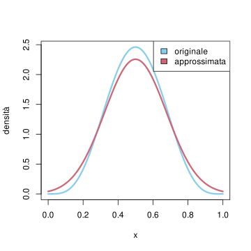
Basta tuttavia modificare di poco l’esempio sopra per ottenere una cattiva approssimazione, dovuta all’asimmetria della densità.
Consideriamo infine un esempio nel caso vettoriale. Approssimiamo variabile a valori in \(\R^2\) con densità \[ p( (X,Y ) = (x,y)) \propto (5-(y-\sin(2\pi x))^2 )(1-x^2)(1-y^2)\] per \(x\), \(y \in [-1,1]\) e nulla fuori.
deltax=0.05deltay=0.05x=seq(-1,1, by=deltax)y=seq(-1,1, by=deltay)N_x =length(x)N_y =length(y)# creiamo una matrice con i valori della densità, inizialmente tutti nullidensita =matrix( nrow=N_x, ncol=N_y)# definiamo la funzione che calcola la densitàdensita_funzione =function( v){ (5-(v[2]-sin(2*pi*v[1]))^2 )*(1-v[1]^2)*(1-v[2]^2)}for (i in1:N_x ){for (j in1:N_y){ densita[i,j]=densita_funzione( c(x[i], y[j])) }}densita = densita/sum(densita*deltax*deltay)filled.contour(x, y, densita, color.palette = viridis, xlab='x', ylab='y')
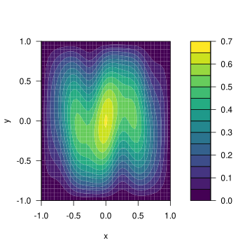
heatmap della densità sopra
Vediamone ora l’approssimazione di Laplace.
log_dens =function(x){if( abs(x[1])>1|abs(x[2]) >1){Inf }else-log( densita_funzione(x)) }moda =nlm( log_dens, p=c(0.5, 0.5), hessian=TRUE)library(mvtnorm)m = moda$estimate# usiamo la funzione solve per calcolare l'inversa della matrice hessianaK =solve(moda$hessian)for (i in1:N_x ){for (j in1:N_y){ densita[i,j]=dmvt( c(x[i], y[j]), m, K) }}filled.contour(x, y, densita, color.palette = viridis, xlab='x', ylab='y')
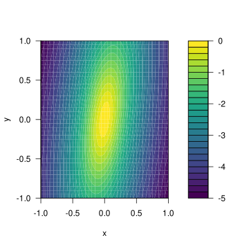
heatmap dell’approssimazione di Laplace.
5.9.1 Esercizi
Scrivere l’approssimazione di Laplace per una densità proporzionale a \(x^3 (1-x)^2\) per \(x \in [0,1]\), e nulla altrimenti. Procedere sia analiticamente che tramite opportuni comandi R.
in questa sezione torniamo ad indicare con \(X\) delle variabili aleatorie generali, mentre nella sezione precedente rappresentavano i predittori, di cui abbiamo visto non è necessario supporre la gaussianità↩︎